Rotterdam wordt door ‘de grote volksverhuizing’ een stad met vele werelden.
Anno 2000 is 70% van de bewoners en 90% van de jeugdigen in Rotterdam-West van niet-Nederlandse komaf.
Opbouwwerkers zetten zich in voor ‘samen wonen en samen leven’ in buurten en straten. Er ontstaat een beweging met Opzoomeraars, met initiatieven van Thuis op straat en Duimdrop om een vreedzaam samen leven in straten en op pleinen te bewerkstelligen.
Wethouder Herman Meijer GroenLinks roept in 1999 op tot ‘íets van een stadsetiquette’, met basale omgangsvormen in het publieke domein en ‘straatburgerschap’.
Verschillen en tegenstellingen nemen in de jaren 90 en 2000 toe. Pim Fortuyn organiseert in 2002 een politieke opstand tegen ‘de elites van de multiculturele samenleving’.
Veiligheid is het centrale thema van het nieuwe stadsbestuur van Leefbaar Rotterdam, CDA en VVD. Het College zet ook het initiatief voor een Stadsetiquette voort met het project Mensen Maken de Stad.
Opbouwwerkers gaan samen met bewoners ‘straatagenda’s’ ontwikkelen, met afspraken over omgangsregels in de straat en over de inzet van gemeentelijke diensten en politie voor een veilige en schone buurt. Projectleider en Opzoomer-directeur Johan Janssens spreekt van ‘een diepte-investering in samenlevingsopbouw’.
De positie van opbouwwerkers verandert. Sinds de jaren 70 vormde de bewonersorganisatie de uitvalsbasis voor het opbouwwerk. Deze organisaties kunnen niet langer fungeren als de belangenorganisatie van de bewoners van de wijk. De organisaties veranderen met horten en stoten in steunpunten voor verschillende groepen.
Er ontstaat ook strijd over de positie van opbouwwerkers, velen kiezen voor een rol als ‘derde’ tussen verschillende groepen en instanties, anderen blijven werken als belangbehartiger en zaakwaarnemer van bewoners of proberen deze rollen te combineren. Deelgemeenten gaan zich directer bemoeien met taakstelling en werkwijze van opbouwwerkers.
De wereldwijde financiële crisis in 2008 leidt tot grote bezuinigingen in de sociale sector. Het welzijnswerk wordt aanbesteed aan nieuwe aanbieders, opbouwwerkinstellingen in Rotterdam verliezen de aanbesteding van het werk. Het opbouwwerk als onafhankelijke sociale voorziening ten dienste van bewoners verdwijnt, het nieuwe devies wordt zelfredzaamheid en zelforganisatie.
Opzoomeraars in straten gaan voort op eigen kracht, gestimuleerd door Opzoomer Mee.
Bij het samenstellen van deze laatste aflevering van de website opbouwwerkinrotterdam.nl kon ik als redacteur putten uit een reeks case-studies die ik als sociaal onderzoeker samen met opbouwwerkers maakte ‘om te leren van gevallen’. Deze beschrijvingen brengen ‘het hardnekkig handwerk’ in beeld in de straten en de buurten. In deze terugblik plaats ik, als deelnemer en waarnemer, het Rotterdamse opbouwwerk binnen de maatschappelijke en politieke ontwikkelingen van de jaren 90 tot 2010.
Na het opheffen van de stedelijke opbouwwerkinstelling in 1996 werd het opbouwwerk ondergebracht in instellingen in deelgemeenten. De geschiedenis van SONOR, Delphi, DOCK, Charlois’ Welzijn is een verhaal apart dat nog geschreven moet worden.
Aan deze editie werd meegewerkt door Johan Janssens die een centrale rol speelde in de beschreven periode. Bijdragen werden geleverd door Nel ten Boden, Elske Geleedst, Ton Huiskens, Corrie Kreuk, Lia Prins en Paul Steinmann. De productie van de website is in handen van Erik Lindenburg It Plus.
Anne van Veenen, redacteur
mei 2021
Overzicht
De ontwikkeling van het Rotterdamse opbouwwerk in de periode vanaf eind jaren 90 tot 2010 wordt gedocumenteerd in 9 hoofdstukken.
1.Rafelranden van de stadsvernieuwing
De stadsvernieuwing stagneert in de jaren 90. Opbouwwerk gaat een rol spelen bij ‘sociaal investeren’ in de Millinxbuurt (Tarwewijk) en de Wilgenblokjes (Oude Noorden).
2. Goeie morgen, Opzoomercampagnes
Opzoomer Mee organiseert jaarlijkse campagnes en manifestaties waaraan duizenden bewoners meedoen. De organisatie spreekt van ‘samenlevingsopbouw in de straat’. Er komen verbindingen tot stand tussen kinderen, jongeren en ouderen met verschillende achtergronden en met stadsbestuur, diensten en instellingen.
3. Samenlevingsopbouw: weven aan de samenleving
De opbouwwerker dient een onafhankelijke positie in te nemen en versterkt het zwakste belang in de samenleving. Aldus het Statuut Opbouwwerk in 2001. Opdracht van opbouwwerkers is ‘weven aan samenleven’, tussen mensen burgers en groepen, en met overheidsinstanties, bedrijven en instellingen.
4. Sociaal investeren en Stadsetiquette
Samenleven is in Rotterdam niet meer zo vanzelfsprekend als het ooit was, constateert wethouder Herman Meijer in 1999. De diversiteit aan culturen en leefstijlen verrijkt en maakt complexer. Er zijn afspraken nodig over basale omgangsvormen in het publieke domein, ‘iets als een stadsetiquette’. Opbouwwerkers onderzoeken hoe bewoners elkaar kunnen aanspreken zonder ruzie te krijgen. Gezamenlijke zorg voor kinderen blijkt een kernwaarde in de straat.
5. 2002 multiculturele samenleving
Politieke nieuwkomer Pim Fortuyn legt de vinger op de zere plekken van ‘de multiculturele samenleving’. De verkiezingsstrijd in 2002 gaat over onveilige wijken, ‘de kracht van verschillen’ en ‘de islamisering van de Nederlandse cultuur’. Leefbaar Rotterdam neemt de macht over van de PvdA in Rotterdam.
6. Veiligheid en straataanpak, Mensen Maken de Stad
Veiligheid staat centraal voor het stadsbestuur met Leefbaar Rotterdam. Het programma voor Sociale integratie heeft ook een sociale pijler, het experiment met Stadsetiquette wordt vanaf 2003 tot 2010 voortgezet met het project Mensen Maken de Stad. Er worden miljoenen geïnvesteerd in opbouwwerk en samenlevingsopbouw. Bewoners en opbouwwerkers maken straatagenda’s, met afspraken over gedragsregels in de straat en over de inzet van gemeentelijke diensten en politie. Opbouwwerkers stimuleren ‘straatburgerschap’.
7. Binden en verbinden in naoorlogse ‘herstructureringswijken’
De flatwoningen in naoorlogse wijken zijn verouderd. Bewoners van het eerste uur vertrekken, er vestigen zich steeds meer nieuwkomers van niet-Nederlandse komaf. De verschillende groepen waarmee we werken lopen naast elkaar, zegt de opbouwwerker van Zuidwijk in 2003. Sloop en nieuwbouw moet een nieuwe mix bewerkstelligen van meer- en minder draagkrachtige bewoners, en van autochtone en allochtone inwoners. Opbouwwerkers ontwikkelen nieuwe sociale netwerken en nieuw sociaal leiderschap.
8. Samenlevingsopbouw en sociale projecten
Samenlevingsopbouw is veranderd, zeggen opbouwwerkers die 25 jaar in het vak zitten. Het opbouwwerk verliest de ruimte om relaties aan te gaan met bewoners en om initiatieven ‘van onderop’ te stimuleren. Opbouwwerk wordt steeds meer werken aan voorbedachte sociale projecten van gemeente en deelgemeente. Door te werken vanuit instituties in plaats vanuit bewoners en de buurt schiet opbouwwerk zijn doel voorbij, luidt de kritiek.
9. Naschrift: zelfredzaamheid en Opzoomeren
De financiële crisis van 2008 leidt tot grote bezuinigingen in de sociale sector. Het welzijnswerk wordt opnieuw gedefinieerd en aanbesteed. Opbouwwerkinstellingen verliezen in 2012 de aanbesteding voor hun werkgebied. Zelfredzaamheid en zelforganisatie zijn de nieuwe trefwoorden, minder zelfredzame bewoners vinden moeilijker aansluiting, het spel en tegenspel van bewoners en gemeente verzwakt.
Opzoomeraars gaan opereren op eigen kracht, gestimuleerd door Opzoomer Mee dat de opbouwwerk-traditie van Rotterdam voortzet.
1 Rafelranden van de stadsvernieuwing
Het stoppen van de stadsvernieuwing door bezuinigingen leidt tot straten met dichtgetimmerde panden in afwachting van een nieuwe aanpak. De projectgroepen stadsvernieuwing worden begin jaren 90 opgeheven, de woningcorporaties krijgen het voortouw bij wijkvernieuwing nieuwe stijl met beperkte budgetten, aangevuld met particuliere woningverbetering en ‘intensief beheer’.
Corporaties, gemeente, eigenaren en bewoners zitten vaak niet op één lijn. Renovatie biedt meer kansen voor zittende bewoners dan sloop en nieuwbouw, maar woningverbetering leidt onvoldoende tot de gewenste ‘upgrading’ van wijken.
Er ontstaan ‘rafelranden van de stadsvernieuwing’, met drugsoverlast, criminaliteit en armoede. Voorbeelden zijn de Millinxbuurt in de Tarwewijk nabij het Zuidplein en de Wilgenbokjes in de Zaagmolenbuurt in het Oude Noorden
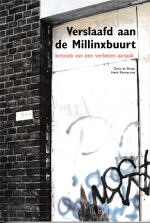Waarom is het zo vreselijk misgegaan in de jaren 90 in de Millinxbuurt, vraagt projectleider Duco de Bruin zich af in Een kroniek van een verbeten aanpak van de periode 1997-2002. noot
Het zelfregulerend vermogen van de buurt nam af, luidt de diagnose, er was sprake van een grote anonimiteit. Dit blijkt een uitstekende voedingsbodem voor criminaliteit.
Plan voor de Millinxbuurt wordt om de woningen te renoveren en sociale problemen zoveel mogelijk in de buurt op te lossen en niet naar elders te verschuiven. Van de 1000 woningen worden 300 aangekocht door woningcorporatie De Nieuwe Unie om na renovatie deels aangeboden te worden als huurwoning en deels als koopwoning. Daarnaast zullen 300 woningen aangepakt worden via particuliere woningverbetering. Dit moet voldoende impuls geven aan de buurt, alle woningen aanpakken is te duur.
Opbouwwerker Jan Maas wordt projectleider sociaal. Er heeft zich een groep van zo’n 600 Antillianen gevestigd in de Millinxbuurt. Een huisjesmelker in de buurt blijkt woningen te verhuren aan een bedrijfje op de Antillen. Er komen veel jongeren zonder werk en zonder inkomen die aan de kost komen met dealen en inbraken. Opvangvoorzieningen ontbreken.
Maas wil investeren in ‘de onderkant’ met zorg, scholing en werk. Hij zet zich in voor de komst van een gebruikersruimte van de Boumankliniek en van Topscore, een werkproject voor verslaafden uit de buurt en van Perron Nul dat in 1992 wordt gesloten. ‘Met Zero Tolerance en een samenscholingsverbod verjaag je ze naar Pendrecht, dat lost niets op.’
Jan Maas heeft een uitgesproken visie. ‘De grote stad trekt nu eenmaal mensen aan die zich aan de onderkant bevinden. En buurten zoals deze, waar de huizen slecht zijn, waar veel achterstallig onderhoud is en waar veel huisjesmelkers zitten, krijgen dan een functie als verzamelplaats van deze mensen. Als je ziet dat een bepaalde buurt op een gegeven moment de functie gaat vervullen om dat soort groepen te huisvesten, zorg dan ook dat je in die buurt de mensen de zorg en hulp kunt bieden die ze nodig hebben.’
Het lukt de sociaal projectleider om met collega Arend Koster om een groep jongeren aan het werk te krijgen, maar de dienst Sociale Zaken ziet dat ze allemaal hun uitkering hebben laten doorlopen. Maas: ‘De jongeren denken alleen maar op de korte termijn, zo van: kan ik mooi even mijn schulden afbetalen. Of ze komen niet zonder zich af te melden, ze krijgen ruzie. Dat is dus inderdaad een ramp. Maar ja, ze hebben het moeilijk, ze weten de weg niet, ze doen het allemaal fout. Je ziet ze afglijden. Je moet ze net zo veel kansen geven tot ze er een pakken.’
De sociaal projectleider wil meer weten over Antillianen. ‘We begrijpen niks van die Antillianen. Hoe hun cultuur in elkaar zit, de normen en waarden.’ Hij belt aan in de straat om contact te leggen en gaat in gesprek met Antilliaanse jongeren. Hij organiseert ook de communicatie tussen verschillende groepen in de buurt.
Het uitgangspunt dat de Millinxbuurt haar eigen problemen moet oplossen blijkt niet uitvoerbaar. De problemen zijn veel te groot voor de zes starten van de Millinxbuurt concludeert projectleider fysiek Duco de Bruin, een meer evenwichtige verdeling van de grootstedelijke problematiek is de enige manier om tot acceptabele oplossingen te komen. Een opvangfunctie botst met andere belangen, zoals het aantrekken van middengroepen met koopwoningen.
De projectleider stelt vast dat de grote aandacht voor veiligheid de beeldvorming over de buurt vaak erg negatief heeft beïnvloed. De Millinxbuurt gaat bekend staan als De Rotste Buurt van Nederland. Veel effectiever dan grootschalige fouilleer-acties is naar zijn ervaring de inzet van de gewone buurtagent die iedereen kent en weet wat er speelt.
Op de plek van een gesloopt woonblok in het centrum van de buurt komt een parkje en een buurtcentrum het Millinxparkhuis. Er blijkt veel animo voor de koopwoningen. noot
Wilgenblokjes
Ook de Zaagmolenbuurt in het Oude Noorden is ‘restgebied’ van de stadsvernieuwing. Plannen voor sloop en nieuwbouw zijn omstreden, veel bewoners kunnen de hogere huren van nieuwbouwwoningen niet betalen en zullen als ‘stadsvernieuwingsnomaden’ op zoek moeten naar huisvesting in andere onverbeterde buurten. Wethouder Meijer van Volkshuisvesting en Sociale vernieuwing wil een plan voor ‘sociale stadsvernieuwing’, ten behoeve van de mensen die in de buurt wonen.
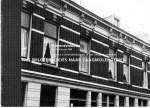Het plan voorziet in renovatie en het samenvoegen van een deel van de woningen, met een aanbod van grote goedkope koopwoningen in maatschappelijk gebonden eigendom. Deze woningen zijn bedoeld voor migranten-families in de buurt die op zoek zijn naar betere huisvesting. Het plan bevat ook een aantal zelfbouwwoningen, waarbij alleen het casco wordt vernieuwd en bewoners de woningen zelf afbouwen. noot
Tweede poot van het programma is ‘sociaal investeren’ door opbouwwerk in sociale samenhang en wijkopbouw. Opbouwwerker Hetty Zeegers gaat daarmee in de periode 1996-1998 aan het werk, ondersteund door een commissie Sociaal Proces van betrokken partijen van (deel)gemeente, woningcorporatie en bewonerssteunpunt Rapsodie.
Het vernieuwingsproces van de buurt verloopt anders dan voorzien. De opbouwwerker treft weinig sociale samenhang aan in de buurt: ‘Wat ik tegenkwam was diversiteit en losse verbanden. Er was een groep Nederlandse vrouwen die de buurt steeds verder achteruit hadden zien gaan. Er waren enkele grote Turkse en Marokkaanse gezinnen waarvan een aantal al snel verhuisde naar een aangrenzende buurt. Veel mensen hadden vooral gemeenschappelijk dat ze aangewezen waren op goedkope woonruimte.’
De opbouwwerker komt tot de conclusie in dat de komende jaren niet het behoud van sociale samenhang centraal komt te staan in de buurt maar een uitverhuisproces. Een kleine groep maakt de passage mee van de oude naar de nieuwe buurt. Waar de verschillende groepen allemaal mee te maken hebben is het veranderingsproces. ‘Dat is de keuze die ik heb gemaakt: in de situatie waarin bewoners verkeren is informatie en communicatie over de plannen veel belangrijker dan het bij elkaar houden van allerlei groepen.’
Belangrijke taak van de opbouwwerker wordt om bij te dragen aan de veiligheid en leefbaarheid van de buurt tijdens het verbouw- en verhuisproces. Ze stuit daarbij ook op negatieve kanten van de bestaande sociale samenhang, met een criminele cultuur en drugsverslaving.
Het overleg van de opbouwwerker en de commissie Sociaal Proces over de ontwikkelingen in de buurt en de keuzen van de opbouwwerker verloopt moeizaam. De commissie Sociaal Proces van betrokken instanties is haar opdrachtgever en niet de opbouwwerkinstelling. De opbouwwerker kan daardoor niet opereren vanuit een onafhankelijke positie.
De casus van de Wilgenblokjes wordt door andragoog Geert van der Laan geanalyseerd als sociale interventie van professioneel opbouwwerk in stedelijke vernieuwing. De ontwikkelingen dwingen het opbouwwerk tot improviseren, zoals bij veel ingrepen in het sociale was ook hier sprake van ‘schieten op een bewegend doel’. ‘Dat betekende permanent bijsturen, in een voortdurend veranderend krachtenveld, waarbij het de nodige moeite kostte de oorspronkelijke doelen in het oog te houden.’ noot
De uitkomsten van ‘sociale stadsvernieuwing’ blijken verrassend. De koopwoningen in de Wilgenblokjes zijn gewild bij Turkse en Marokkaanse families van de 2e generatie uit andere buurten van het Oude Noorden. In de Millinxbuurt worden gerenoveerde woningen gekocht door Turkse, Hindoestaanse en Nederlanders mensen.
2 Goeie morgen, Opzoomercampagnes
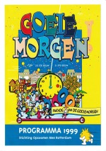Opzoomeren manifesteert zich in 1999, tien jaar na de start in de Opzoomerstraat, met een grote parade op de Coolsingel waaraan 10.000 bewoners deelnemen. Leus van de optocht is: Goeie morgen. noot
De net aangetreden burgemeester Opstelten groet de Opzoomeraars en neemt op het bordes van het stadhuis zijn hoed af voor de Rotterdammers. Een kleurige rood-witte hoed is het nieuwe embleem van Opzoomer Mee, elkaar groeten wordt gevierd als teken van een prettige en veilige straat.
De tekst van de folder voor de campagne leest als een aanbieding die je niet kunt missen.
GOEIE MORGEN!
Investeer in de toekomst van Rotterdam en maak kans op aantrekkelijke premies voor uw straat, buurt, school, buuthuis of…!
WAT U MOET DOEN
Vorm een team van 15 personen en 1 coach. Elke samenstelling is toegestaan, zolang het maar Rotterdammers zijn.
1 Bewijs dat u een goed team heeft. Leg de teamproef af.
2 Investeer in de toekomst van Rotterdam. Voor een geheime opdracht uit in uw deelgemeente.
3 Verwelkom de komende eeuw. Maak van de Parade van de Goeie Morgen een groot feest.
WAT KRIJGT U
Slaagt uw team voor alle uitdagingen? Dan sleept u de Opzoomer Ster 1999 met een waarde van f 999,00 in de wacht en een Party Box om de eeuwwisseling te vieren. En… u maakt kans op nieuwe premies in het jaar 2000.
Opzoomer Mee stimuleert sinds 1994 initiatieven in straten. Het bureautje heeft het stokje overgenomen van het projectbureau Sociale Vernieuwing. Methoden zijn ‘uitdagen en belonen’ van initiatieven en ‘premie op actie’. Een groepje van drie bewoners kan een aanvraag doen voor budget van f 250, – om een initiatief in de straat te organiseren, aan het eind van het jaar is een kerstboom in de aanbieding bij de campagne O Denneboom. Opzoomer Mee omschrijft Opzoomeren als ‘samenlevingsopbouw in de straat’, het gaat om ‘handen uit de mouwen, eigen initiatief en een positieve oriëntatie’.
De campagnes richten zich ook op instituten. Gemeentelijke diensten en bestuurders worden uitgedaagd om een bijdrage te leveren vanuit de programma’s voor Schoon en heel, sociale cohesie en wijkontwikkeling. Opzoomer Mee richt zich op samenlevingsopbouw via onderlinge contacten tussen bewoners en op de wisselwerking met bestuur en instellingen.
Opzoomer Mee ontwikkelt een eigen jargon, met termen uit wereld van opbouwwerk en samenlevingsopbouw, teambuilding, communicatie en marketing.
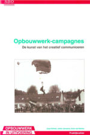Het bureau onder aanvoering van oud opbouwerker Johan Janssens verstaat de kunst van het creatief communiceren, hij liet zich eerder kennen met inventieve opbouwwerkcampagnes.
Het programma van de campagne Goeie morgen biedt een blik in de machinekamer van Opzoomer Mee. De stedelijke campagne wil een raamwerk bieden voor initiatieven in straten, deze kleinschalige straatacties zichtbaar maken in de stad en verbinden met een Rotterdam-gevoel. De campagne moet ‘een bijzondere ervaring’ opleveren, een gebeurtenis waarover wordt nagepraat en die verbindt. De optocht moet de verbeeldingskracht prikkelen van de deelnemers, ‘ze kunnen honderden dingen bedenken: liederen, dansjes, acts, praalwagens, attributen, enzovoorts’.
Opzoomer Mee wil met de campagne ‘het samenspel van spelers’ in straten en groepen, in deelgemeenten en op stedelijk niveau ‘onder stroom zetten’. De deelgemeente is makelaar en regisseur voor de actiedag in hun gebied, gemeentelijke diensten vormen Opzoomerteams die contact leggen met actieve Rotterdammers. Ze krijgen ook de uitdaging om een praalwagen voor de parade te maken die de dienst in de 21-ste eeuw verbeeldt. Aan wethouders van Sociale vernieuwing Herman Meijer en van Schoon & heel Els Kuijper wordt gevraagd op te treden als ‘frictiemonteur’. B&W en raadsleden krijgen ook de uitnodiging om teams te vormen van ‘bijzondere Rotterdammers, zoals vluchtelingen, daklozen en ondernemers’.
Deelnemende straten en groepen die de eindstreep halen ontvangen een premie van f 1999,- vrij besteedbaar en als extra een Party Box ter waarde van f 250,- om de overgang naar het nieuwe jaar 2000 te vieren. Rotterdam Festivals krijgt het verzoek om dit te financieren.
Een praalwagen ‘van het eerste uur’ is gereserveerd voor bewoners van de Opzoomerstraat. Ze houden de boot af, er is kritiek op het van bovenaf georganiseerde spektakel waarin ze mee moeten doen. Opzoomeren moet van onderop komen zegt Chris Hooymayers jr., ‘nu wordt de deelnemers met duizend guldens een worst voorgehouden’. Ons doel is ook straten erbij te betrekken die zichzelf nog niet kunnen organiseren, reageert Johan Janssens. ‘Het spel dat we spelen is gevaarlijk’, erkent hij. ‘Regel je te veel dan krijg je kritiek dat je betuttelt, doe je weinig dan gebeurt er ook te weinig.’ Opzoomer Mee streeft naar een ‘activerend evenwicht’, met een balans tussen gezamenlijkheid en het respecteren van het eigen karakter van initiatieven van bewoners in straten. Voor de Opzoomerstraat wordt een praalwagen op maat gemaakt.
Er is een omvangrijk netwerk ontstaan door campagnes van Opzoomer Mee van straten, kinderen, jongeren en ouderen. Een deel van dit netwerk staat bekend als ‘moeilijk bereikbaar’. Het ‘een schatkist in de Rotterdamse samenlevingsopbouw’. Uitdaging is de afzonderlijke delen van het netwerk aan elkaar te koppelen en zo nog productiever te maken en om nieuwe (doel)groepen te werven: jongeren ontmoeten straten; kinderen gaan met ouderen aan de slag; wit ziet zwart; ondernemers en de buurt steken de handen uit de mouwen en jongeren gaan met gehandicapten op stap. Ontmoeting tussen uiteenlopende groepen ‘wordt ingebouwd’ bij alle activiteiten. Opzoomerteams kiezen daarbij kun eigen ‘coach’, een opbouwerker, jongerenwerker, onderwijzer of een imam.
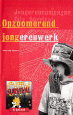De campagnes Blind Date(1996), Mission Impossible (1997) en City Survival (1998) zijn gericht op jongeren en verbindingen met de buurt. noot
Opzoomeren gaat niet om praten maar om activiteiten, zegt opbouwwerker Maurice van Beers. ‘Ik heb als opbouwwerker de neiging om mensen om de tafel te zetten. Dat blijkt bij jongeren niet te werken. Als je iets samen doet met jongeren krijg je contact. Opzoomeren biedt daarvoor de methoden.’ Grootste winst van de opdrachten in de buurt bij City Survival ligt in de beeldvorming: bewoners zien ‘hun’ jongeren op een constructieve wijze bezig voor de wijk. Het tot stand brengen van actieve samenwerking tussen jongeren en ouderen in de buurt blijkt moeilijker te realiseren.
De vissteiger voor rolstoelers die jongeren aanleggen loopt erg scheef, maar de wijkagent die optreedt als scheidsrechter keurt de uitdaging toch goed. ‘Ze hebben tenminste samen gewerkt.’ Hij haalt ruimschoots zijn eigen doel, ‘kennen en gekend worden’, de jongeren gaan er met zijn pet vandoor.
Jan Willem Duyvendak en Peter van der Graaf doen in 2001 onderzoek naar Opzoomeren en het effect op sociale integratie. Ze maken daarbij gebruik van een ‘contactladder’, met een oplopende intensiteit van sociaal contact van ‘participatie’, via ínteractie’, naar ‘verstandhouding’.
Duyvendak en Van der Graaf schetsen Opzoomeren als stille kracht. ‘Er gaan geen miljarden in om zoals bij de herstructurering van wijken, maar als ontmoetingsbeleid is Opzoomeren minstens zo effectief, zo niet effectiever. De Opzoomerinitiatieven leggen een basis voor vreedzaam samenleven en in sommigen situaties zelfs voor veelvuldig sociaal contact.’ noot
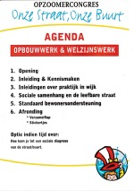Opbouwwerkers, bewoners en onderzoekers gaan aan de hand de contactladder op een Opzoomercongres december 2001 Onze straat, onze buurt in discussie over de doelen van Opzoomeren. noot
Opzoomer Mee coördinator Johan Janssens concludeert dat bewoners over het algemeen de sociale contacten in een straat ‘beperkt’ houden. Elkaar groeten, kennen, rekening houden met elkaar is prima en komt de leefbaarheid van de straat te goede, maar verder wil men vooral kunnen leven in eigen kring (generatie, cultuur of leefstijl). Als het Opzoomeren te verplichtend wordt of inbreuk maakt op de privé sfeer, dan onttrekt men zich er in de regel snel aan.
Janssens: ‘Opzoomeren draait blijkbaar om het vinden van een evenwicht tussen de eigen leefstijl en het belang van een vertrouwde, veilige en leefbare straat. Grote begrippen als ‘integratie’ en ‘sociale cohesie’ zijn een beetje van toepassing, voor zover ze de leefbaarheid van de straat ten goede komen.’ De effecten van Opzoomeren mogen ogenschijnlijk klein zijn, voegt hij toe, maar in een multiculturele wereldstad zijn ze van groot belang. ‘Het is elke keer een klein wereldwonder als het in een straat lukt.’
3 Samenlevingsopbouw: weven aan de samenleving
In de jaren 90 gaan opbouwwerkers in Rotterdam steeds meer werken vanuit een positie als ‘derde’, tussen verschillende groepen mensen in de buurt en diverse instanties. De bewonersorganisaties waaraan het opbouwwerk is gelieerd veranderen. Inzet van opbouwwerkers is om bewonersorganisaties en wijkorganen te ontwikkelen tot losse samenwerkingsverbanden van diverse zelfstandige bewonersgroepen in de wijk, met gedeelde faciliteiten en ondersteuning.
Niet belangenbehartiging maar vorming van sociale netwerken staat centraal. De term ‘samenlevingsopbouw’ keert terug en komt in de plaats van de doelstelling van ‘belangenbehartiging door zelforganisatie’ uit de jaren 70 en 80. De veranderingen zijn omstreden.
Het Rotterdamse opbouwwerk maakt deel uit van het landelijk platform van opbouwwerkinstellingen van het LCO, het Landelijk Centrum Opbouwwerk. Het LCO zorgt voor de inhoudelijke vak-ontwikkeling met het blad MO Samenlevingsopbouw
De jaarlijkse Vakconferentie Opbouwwerk onder voorzitterschap van voormalig projectleider Sociale Vernieuwing Gerard de Kleijn is trefpunt van opbouwwerkers uit het hele land. Ook de hoogleraren Samenlevingsopbouw maken hun opwachting op de vakconferentie.
Er ontstaan samenwerkingsverbanden rond nieuwe werkterreinen. Het Landelijk Samenwerkingsverband Achterstandswijken LSA organiseert onder leiding van Henk Cornelissen uitwisseling tussen bewoners in stadsvernieuwings- en herstructureringswijken. Het LSA wordt van een breed samenwerkingsverband van Actieve bewoners dat inspeelt op het wijkenbeleid van de overheid.
Stuwende kracht binnen het LCO is Wil van der Leur. Hij staat ook aan de wieg van de leerstoel Opbouwwerk: Bijzondere leerstoel Wetenschappelijke grondslagen van het opbouwwerk van de Gradus Hendriks Stichting aan de Erasmus Universiteit in Rotterdam. De hoogleraren produceren kritische analyses van sociale ontwikkelingen en zetten vraagtekens bij de wijk als domein voor samenlevingsopbouw (Talja Blokland) en bij sociale menging door herstructurering van wijken (Jan Willem Duyvendak). noot
Duyvendak J.W, Veldboer L. red. (2001) Meeting Point Nederlands. Over samenlevingsopbouw, multiculturaliteit en sociale cohesie. Amsterdam Boom
Broekman H., Dozy M.C., Duyvendak J.W., Pennen T. van der (2000) Opbouwwerk 2000: Beeld en perspectief. Den Haag Opbouwteksten 14 Gradus Hendriks Stichting
Het LCO is ook uitgever van het veelgebruikte Handboek Opbouwwerk van Harry Broekman.
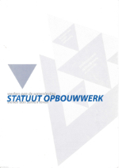Het LCO produceert in 2001 in samenwerking met de leerstoel Opbouwwerk het Statuut Opbouwwerk, een mijlpaal in de vak-ontwikkeling van opbouwwerk. noot
Het statuut verwoordt de missie, het werkproces, de condities en de verantwoording van de opbouwwerker. Opdracht van de opbouwwerker is ‘weven aan samenleven’, tussen mensen, burgers en groepen (horizontaal) en met overheidsinstanties, bedrijven en instellingen (verticaal).
De opbouwwerker wordt getypeerd als een makelaar, een schakelaar, een wever, een organisator, een uitvinder. Grote veranderingen in de samenlevingsdynamiek veroorzaken ‘sleetse plekken en gaten in het sociaal weefsel’ die vragen om nieuwe weefpatronen. Dat is de sociaal-innoverende opdracht voor de opbouwwerker.
Kerntaak is samenlevingsopbouw, het versterken van burgerschap, het bijdragen aan sociale ontwikkeling en het versterken van humaniteit. De opbouwwerker bevordert de zelfredzaamheid van burgers en biedt strategisch en sociaal organisatorisch advies. Deze ondersteuning dient ongebonden te zijn en vrij van strijdige belangen.
De opbouwwerker draagt bij aan sociale verbetering met ondersteuning van initiatieven en participatie van mensen en met signalementen en bouwstenen voor sociaal beleid.
De opbouwwerker legt verantwoording af voor zijn werk naar de eigen organisatie en subidiegevers, naar de burgers als inhoudelijke opdrachtgevers en naar collega’s over methodisch en ethisch handelen.
‘Signaleren en beleidsbeïnvloeding’ blijft een belangrijke taak van het opbouwwerk.
Ontwikkelingsproject van LCO en RIO is het Stedelijk Kwaliteitspanel Rotterdam. In het rapport Klagen in Rotterdam wordt de gemeentelijke klachtafhandeling aan de kaak gesteld. Leden van belangengroepen en bewonersorganisaties toetsen de kwaliteit van de publieke dienstverlening, van het onderhoud van metrostation tot het aanbodmodel van de Woonkrant. Voorzitter is Sherita Thakoerdat, actief binnen de bewonersorganisatie Spangen, tot de leden behoren Nel Corstanje (FNV Rotterdam), Peter van Mullem (Buurtwinkel Spangen) en Driss Tabghi (Marokkaanse Culturele vereniging Charlois).
Het panel treedt op als een soort ombudsman. De Rotterdamse dienst Sociale Zaken financiert het panel en projectleider Gerard Nijssen noot
4 Sociaal investeren en stadsetiquette
De ‘wijkaanpak’, de Rotterdamse toespitsing van het Grote Steden Beleid, staat in de traditie van de bewonersparticipatie tijdens de stadsvernieuwing, van sociale vernieuwing en Opzoomeren. Sociaal investeren is hart van de wijkaanpak, stelt de wethouder volkshuisvesting en sociale vernieuwing Herman Meijer (GroenLinks) in 1999. Het is investeren in de ontwikkeling van mensen en in hun onderlinge relaties.
Sociale netwerken zijn belangrijk voor het samenleven in de wijk én voor ‘het rondkomen en vooruitkomen’. noot
Sociaal investeren is meer dan achterstandsbeleid, het is gericht op het mogelijk maken van sociale stijging en emancipatie van verschillende groepen bewoners. Meer koopwoningen in oude wijken biedt kansen voor een ‘wooncarrière’ in de wijk voor bewoners die meer gaan verdienen. Minstens zo belangrijk is de inrichting en het beheer van de woonomgeving en de pleinen. ‘Duimdrop, Thuis op straat TOS en Opzoomeren zijn uitvindingen waarop Rotterdam trots kan zijn’, aldus Meijer. Duimdrop, de speeluitleen op pleinen, is uitvalsbasis voor het creëren van nieuwe omgangsvormen en gedragsregels die paal en perk moeten stellen aan ‘de hardheid, onveiligheid, grofheid en criminaliteit van de straat’. Gebod op het plein is: verboden te schoppen, te slaan en te dreigen.
Wethouder Meijer wil aansluiten bij initiatieven van en met burgers die hun verantwoordelijkheid voor de openbare ruimte vergroten, met afspraken van bewoners in de onderlinge omgang. Hij stelt vast dat samenleven in Rotterdam niet meer zo vanzelfsprekend is als het ooit was. Dat heeft alles te maken met de voortgaande immigratie, met nieuwkomers die zich moeten zien in te passen, en met individualisering. De diversiteit aan culturen en leefstijlen verrijkt en maakt complexer. Samenleven blijkt een kunst die geleerd moet worden.
Opgave is ‘de kracht van de verschillen’ te benutten en oog te hebben voor wat inwoners in cultureel opzicht meebrengen. ‘Veel mensen met een Marokkaanse en Turkse achtergrond zijn grootgebracht met drie waarden waarmee ze zich onderscheiden van de meeste autochtonen. Dat is ten eerste respect voor ouderen, ten tweede aandacht (tijd nemen) voor elkaar en ten derde gastvrijheid.’ Hoe kan de Nederlandse maatschappij meer ruimte kan scheppen voor deze waarden en cultuuruitingen? De Marokkaanse fontein op het Noordplein die in 1999 wordt vervaardigd door ambachtslieden uit Fez is een uiting van de veelkleurigheid van Rotterdam.
De wethouder wil zich niet bemoeien met de waarden waarin mensen geloven. ‘Aan het gewicht dat mensen toekennen aan ‘vrijheid’, ‘eer’, ‘respect’, ’gelijkheid’, ‘autonomie’ of ’gastvrijheid’- verandert in de jaren des verstands niet veel meer. Het is ondoenlijk, zo niet ongewenst, te proberen daarin verandering te brengen, zeker door een overheid. En zo ze dit al zou wensen, vanuit welke waardenschaal zou zij zo’n poging moeten wagen?’
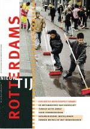Waar de overheid zich wel mee moet bemoeien zijn de normen en gedragsregels die gelden in het publieke domein. Wethouder Meijer doet een oproep: ‘Verantwoordelijkheid gedijt het beste in een stelsel van basale omgangsvormen. Daarover zouden we afspraken moeten hebben. We hebben behoefte aan iets als een stadsetiquette.’
De stad is een mengelmoes van mensen met verschillende belevingen en mensen die zich een positie moeten zien te verwerven in een beperkte ruimte. Dat brengt onherroepelijk spanningen met zich mee. Maar die spanningen zijn hanteerbaar. ‘Een beperkt aantal gerespecteerde regels voor het publieke domein zou moeten volstaan. Het komt neer op rekening houden met elkaars tekortkomingen en behoeften, rekening houden met elkaars anders zijn.’
De wethouder roept op tot iets meer elegantie in het onderlinge verkeer, het zo parkeren van je auto dat een kinderwagen er nog door kan, hoffelijkheid tegenover ouderen, een schone stad ook jouw zorg laten zijn.
René Diekstra, voorzitter van de Taakgroep Sociale Infrastructuur, verkent de mogelijkheden voor het ontwikkelen van een stadsetiquette. De Taakgroep adviseert wethouder Meijer bij het maken van een plan voor de strategische wijkaanpak, Visie 2000-2010. Ahmed Aboutaleb, directeur van Forum instituut voor multiculturele vraagstukken, is een van de leden van de taakgroep.
Modernisering sociaal beleid
De Taakgroep Sociale Infrastructuur stelt dat het verbrokkelde sociaal beleid moet worden gemoderniseerd door het stellen van duidelijke doelen en ‘eindtermen’ voor de ontwikkeling van jeugdigen en volwassenen. Streefdoel bij opvoeding is ‘zelfredzaamheid’. Bij leefbaarheid en veiligheid van buurten is ‘collectieve zelfredzaamheid’ een cruciale factor. Hulpmiddel is een ‘taak-analyse model’ om de balans te bepalen tussen problemen die worden ervaren en mogelijke oplossingen. Het model biedt handvatten voor periodieke ‘APK-keuringen’ van sociale programma’s door Rotterdamse Project en Programma Garages, ofwel ‘RPG-keuringen’.
De Taakgroep pleit ook voor een versterking van de uitvoering van beleid door de beste krachten naar de moeilijkste gebieden te sturen, een ‘mariniers-model’. ‘Dialoogplaatsen’ moeten de communicatie tussen het bestuur en burgers verbeteren.
Projectleider René Diekstra onderzoekt ook samen met Johan Janssens, coördinator van Opzoomer Mee, ‘stadsetiquette-achtige initiatieven’ in Opzoomerstraten.
Een bevinding is dat contacten die ontstaan door Opzoomeren ertoe kunnen leiden dat bewoners elkaar groeten op straat, rekening houden met elkaar en letten op de kinderen. Bewoners spreken elkaar daarbij soms ook aan op ongewenst gedrag.
Vrouwen in de Korenaardwarsstraat in het Nieuwe Westen blijken pioniers. Afspraken over omgangsregels met kinderen die in 1995 in de straat werden gemaakt staan in 2001 nog recht overeind. Een klok in de straat geeft aan wanneer het buiten stil moet zijn.
Kortenaardwarsstraat
Kinderen spelen tot ’s avonds laat op straat, veel bewoners ergeren zich over het lawaai en gegil. De ruzies dreigen uit de hand te lopen. Moeders van Kaap Verdische en Nederlandse komaf nemen het initiatief voor een gesprek, ze roepen daarbij de steun in van bewonersorganisatie en opbouwwerk voor een gesprekleider. De bijeenkomst begint met scheldpartijen. De initiatiefneemster vraagt dan om aandacht. ‘Gaan we zo met elkaar om’, zegt ze, ‘voeden we zo met elkaar onze kinderen op?’ Ze weet het gesprek te brengen op afspraken tussen bewoners en kinderen over de overlast. Het trappen met een bal tegen een muur maakt tot ’s avonds laat veel lawaai. Aan het eind van de avond zijn drie regels afgesproken: 1) geen leren bal bij het voetballen, 2) doordeweeks als de kinderen naar school gaan is het rustig om 9 uur (ze hoeven niet naar binnen, maar mogen na negenen, in het weekend na tienen, geen lawaai meer maken; bewoners kunnen de kinderen en elkaar daarop aanspreken), 3) geen racistische taal op straat. Enkele weken later wordt een straatvergadering belegd met kinderen. Nieuwe afspraak is dat een plastic bal om te voetballen wel mag, dat maakt minder lawaai. Een jaar later wordt een grote klok in de straat geplaatst om iedereen te herinneren aan de afspraken. De klok wordt gefinancierd uit een Opzoomer-potje.De klok roept buiten de straat ook gemengde reacties op, sommigen spreken van een ‘avondklok’ en ‘spertijd’.
Diekstra R., Stadsetiquette: over waarden, normen en collectieve zelfredzaamheid van burgers, in: Beer B.T. de, Schuyt J.C.M. red., Bijdragen aan waarden en normen, Wetenschappelijk Raad voor het Regeringsbeleid, Amsterdam University Pres
De gezamenlijke zorg voor kinderen is een kernwaarde in de straat, luidt de conclusie uit de inventarisatie stadsetiquette-achtige initiatieven. Het blijkt de basis van collectieve zelfredzaamheid van de bewoners, met sociale steun van opbouwwerk en jongerenwerk. Belangrijke factor is ook de relatie tussen de school en de ouders.
Het ongekende welzijnswerk
Het aantal kinderen is in de deelgemeente Delfshaven door de immigratie sterk toegenomen, 90% van de kinderen (0-14 jr.) is in 2000 van niet-Nederlandse komaf, 70% van de bevolking allochtoon. De mobiliteit is groot: jaarlijks verhuist een kwart van de bewoners. Het aantal bewoners met een bijstandsuitkering ligt tussen 24% (Tussendijken) en 35% (Schiemond).
 De deelgemeente laat onderzoeken of het welzijnswerk voldoende aansluit op de veranderde bevolking. Het Welzijnsonderzoek Delfshaven karakteriseert Rotterdam West als ‘aanlandgebied’ voor diverse groepen immigranten. noot
De deelgemeente laat onderzoeken of het welzijnswerk voldoende aansluit op de veranderde bevolking. Het Welzijnsonderzoek Delfshaven karakteriseert Rotterdam West als ‘aanlandgebied’ voor diverse groepen immigranten. noot
Belangrijke taak voor welzijnsinstellingen is om er toe bij te dragen dat de nieuwkomers de maatschappelijke kansen in Nederland kunnen benutten. Centrale kwesties zijn de opvoeding en ontwikkeling van kinderen, het opgroeien binnen verschillende milieus, de relatie van ouders en de school. Aandachtspunt is ook het risico- en probleemgedrag van tieners en jongeren.
Onderwijsopbouwwerkers in Bospolder Tussendijken betrekken ouders bij de school. Ze ondersteunen Marokkaanse ouderverenigingen en de overkoepelende organisatie De Groene Lijn die ook samenwerkt met moskeeën.
Aanbeveling is ook dat het opbouwwerk in Delfshaven zich uitdrukkelijker positioneert als onafhankelijke voorziening die ten dienste staat van diverse groepen. De centrale bewonersorganisatie blijkt steeds meer een te eng keurslijf voor de grote diversiteit aan culturen, groepen en zelforganisaties die in een wijk aanwezig zijn. Verschillende bewonersorganisaties ontwikkelen zich tot een los verband van min of meer zelfstandige groepen die een relatie onderhouden met het opbouwwerk.
Jongerenwerkers werken samen met Marokkaanse en Turkse zelforganisaties in de opvangprojecten Delmatur en Abou Rakrak. Marokkaanse jongeren worden gestimuleerd lid te worden van een Nederlandse voetbalclub. De vereniging kampt met ledenverlies door verhuizingen van autochtone bewoners naar buitenwijken en kan de komst van 200 nieuwe leden niet aan, autochtone Nederlanders zoeken een andere club.
Leden van de Marokkaanse vereniging Ettaouhid organiseren huiswerklassen. Vrijwilligers van zelforganisaties en moskeeën organiseren veel activiteiten voor kinderen en jongeren. Wijkwelzijnscoördinator Hans van Zuuren noemt dit het ‘ongekende welzijnswerk’. Een groep bewoners met een islamitische geloofsoriëntatie blijft weg uit buurthuizen omdat ze kritiek hebben op de omgangsvormen, de wijze van tegemoet treden van kinderen en ‘de verkeerde mentaliteit’. Zelforganisaties genieten het vertrouwen van hun achterban. De leden krijgen ook steun in de vorm van advies, informatie en hulp. De communicatie verloopt soepel, de eigen cultuur en identiteit wordt niet ter discussie gesteld. ‘De zelforganisaties vertegenwoordigen deels groepen inwoners die ver af staan van de Nederlandse samenleving. Hun sociale en maatschappelijke leven speelt zich voor een groot deel af binnen de eigen groep.’
De vertrouwensrelatie die de organisaties hebben met de achterban maakt hen tot een belangrijke factor in het welzijnswerk. Ze kunnen welzijnstellingen toegang verschaffen tot de doelgroep. Dit is belangrijk omdat zelforganisaties mensen vertegenwoordigen die langs andere weg moeilijk te bereiken zijn.
Zelforganisaties voelen zich ook miskend omdat ze voor professionele ondersteuning zijn aangewezen op de algemene welzijnsinstellingen. Ze willen eigen beroepskrachten die hun cultuur delen. De meningen daarover binnen instellingen en deelgemeenteraad zijn verdeeld. Er is een fel debat ontstaan over sociale integratie en aanpassing van migranten aan de Nederlandse cultuur en gewoonten. De discussie wordt in aanloop van de verkiezingen van 2002 op scherp gezet door de politieke nieuwkomer Pim Fortuyn.
Zelforganisaties moeten meer invloed krijgen op het welzijnswerk luidt de aanbeveling van het Welzijnsonderzoek. Daarbij wordt niet gekozen voor het aanstellen van beroepskrachten bij categorale organisaties maar voor partnerships. Moskeeverenigingen en andere zelforganisaties moeten kunnen optreden als partner van algemene welzijnsinstellingen, met zeggenschap over de opzet en uitvoering van projecten van welzijnsinstellingen. Partnership moet leiden tot overleg en onderhandeling over verschillen.
De deelgemeente neemt aanbevelingen uit het welzijnsonderzoek over in de nota Sociale Integratie, In Delfshaven telt iedereen mee (2003). Er wordt beleid ontwikkeld voor migrantenzelforganisaties Samenwerken en Samenleven (2004), met subsidies voor activiteiten als huiswerkbegeleiding, gezamenlijke programma’s van samenwerkingsverbanden van migrantenzelforganisaties en algemene welzijnsinstellingen (ouderparticipatie, spijbelen) en een intercultureel aanbod.
Verbetering van het leefklimaat in Delfshaven is vooral afhankelijk van het beter beheersbaar maken van de drugsoverlast door combinaties van repressie en hulpverlening. Opbouwwerkers ondersteunen groepen bewoners die actie voeren tegen drugsoverlast en leggen relaties tussen bewonersinitiatieven en interventies van instanties (politie, justitie, hulpverlening). Bewoners organiseren zich stedelijk in een Burgerplatform. In de meeste wijken bestaat een ‘overlastoverleg’ van bewoners met wijkcoördinator, politie en welzijnsinstellingen. Er worden Meldpunten drugsoverlast ingesteld, acties leiden tot de nieuwe opium-wet Victoria die burgemeesters meer bevoegdheden geeft tot het sluiten van overlast gevende drugspanden. Het aantal dealpanden in Delfshaven daalt van 160 naar 40.
Bewonersorganisaties signaleren dat een groot deel van de overlast wordt veroorzaakt door verslaafden met meervoudige problemen waarop de hulpverlening geen vat heeft. De straat is voor deze mensen de enige optie. De afname van het aantal dealpanden heeft anno 2000 niet geleid tot een groter gevoel van veiligheid.
Naast repressie en hulpverlening is een versterking nodig van sociale contacten in straten en communicatie tussen verschillende bevolkingsgroepen. Beproefde methode is Opzoomeren, Delfshaven scoort hoog in het aantal straten dat mee doet aan Opzoomeracties.
 Opzoomeren verkleurt in de multiculturele wijken van Delfshaven. ‘Tang boeng’, het ga je goed, zegt deelgemeentebestuurder Myrza van Axwijk. Ze spoort ‘mensen van een andere dan de Nederlandse cultuur’ aan tot Opzoomeractiviteiten. Tot de bruggenbouwers van Delfshaven behoort Teresa de Luz, ze is met José Wognum initiatiefneemster in de Korenaerdwarsstraat. noot
Opzoomeren verkleurt in de multiculturele wijken van Delfshaven. ‘Tang boeng’, het ga je goed, zegt deelgemeentebestuurder Myrza van Axwijk. Ze spoort ‘mensen van een andere dan de Nederlandse cultuur’ aan tot Opzoomeractiviteiten. Tot de bruggenbouwers van Delfshaven behoort Teresa de Luz, ze is met José Wognum initiatiefneemster in de Korenaerdwarsstraat. noot
De Opzoomercampagne 2000 heeft als titel Allemaal Rotterdammers, streven is meer ‘koplopers’ te krijgen uit verschillende culturen. Voorwaarde bij het ondersteunen van Opzoomeractiviteiten wordt dat initiatiefgroepen bestaan uit bewoners van diverse afkomst. In de campagne ‘O Denneboom’ worden het Kerstfeest en het Suikerfeest gecombineerd.
Stadsetiquette
In een aantal straten start in 2000-2002 een proef met de ontwikkeling van de stadsetiquette. Pilots op de Mathenesserweg (op de grens van Spangen en Bospolder) en het Verschoorplein (Tarwewijk) moeten meer inzicht geven in de voorwaarden voor het maken van afspraken over omgangsregels in de straat.
Aanknopingspunt bij de Mathenessersweg is de nieuw gevormde Bewoners Organisatie Mathenesserweg. Opbouwwerker Frans Schermer beschrijft hoe hij samen met zijn collega Rieks Westrik in 1997 de anonimiteit doorbreekt in de straat met het plaatsen van kerstbomen. noot
Tien kerstbomen op de Mathenesserweg
De Mathenesserweg is in verval met de komst van junks en dealers. De prostitiezone aan de Keileweg ligt om de hoek. De bewoners trekken zich terug achter de voordeur, ze doen niet mee met een demonstratie tegen een schiet-incident op de kop van de straat. De opbouwwerkers kennen niemand op de Mathenesserweg, ze gaan huis aan huis aanbellen met de vraag of bewoners mee willen doen met het plaatsen van een kerstboom voor de deur. Veel mensen kijken op van die vraag en beginnen te lachen. Wat moet ik dan doen? Het opbouwwerk levert de lampjes en de bewoners zorgen voor de versiering, ze bedenken ook hoe ze een feestje bij de boom organiseren.Het lukt om tien groepjes te vormen, de verlichte bomen in de straat vormen een mooi gezicht. Het is een keerpunt, jaren later wordt er nog over gepraat.
Bij het vervolg staan de opbouwwerkers voor een keuze: doorgaan met Opzoomeractiviteiten of de mensen bij elkaar halen voor een overleg over de plannen voor de straat die in de maak zijn? Beste strategie is eigenlijk om actie te gaan voeren voor een goed plan vindt Schermer, maar dat is niet de stijl van de bewoners. De opbouwwerkers nodigen de mensen uit voor een straatdiner om elkaar wat meer te leren kennen. Een groepje richt midden op de Mathenesserweg een maaltijd aan. Het gaat gepaard met veel gedoe met kinderen maar iedereen vindt het een groot succes. Het leidt tot de oprichting van de Bewoners Organisatie Mathenesserweg BOM die zich bezig gaat houden met plannen voor de aanpak van de woningen, de vervuiling en de drugsoverlast in samenwerking met het informatiepunt van de gemeente dat inmiddels is geopend in de straat.
Het proefproject voor een stadsetiquette in 1999 van gemeente, Opzoomer Mee en opbouwwerk op de Mathenesserweg mislukt. De gesprekken worden overheerst door de drugsoverlast en criminaliteit in de straat. Centrale kwestie voor bewoners is dat ze zich niet serieus genomen voelen door gemeentelijke diensten bij de acties tegen de onveilige situaties. In een dergelijke situatie slaan gesprekken over een stadsetiquette niet aan, concludeert Frans Schermer.
De opbouwwerker ziet wel veel straten in Spangen waar praten over omgangsregels nuttig kan zijn. ‘Het gaat om straten waar bewoners niet georganiseerd zijn. Er zijn veel irritaties maar mensen missen het vermogen met elkaar te praten. Het gaat over jeugd en kinderen die spelen op binnenplaatsen. Als bewoners daarover met elkaar proberen te praten leidt dat snel tot beschuldigingen over en weer. Autochtone ouderen klagen over allochtone kinderen, voor je het weet zitten ze in twee kampen: wij en zij. Oudere bewoners zijn erg gericht op het handhaven van de status quo, allochtonen missen vaak het vermogen om gezamenlijk voor hun belangen op te komen. In zo’n situatie kan werken aan afspraken en een stadetiquette nuttig zijn.’
Op de kop van de Mathenesserweg opent in 2003 Club Math, een particulier initiatief voor samenlevingsopbouw van journalist Nico Haasbroek en Mieke van der Linden.
Gulden regel
Paul Steinmann is van 2001-2011 opbouwwerker in Charlois en de Tarwewijk. Hij blikt in 2021 terug op een proefproject voor een stadsetiquette op het Verschoorplein. De buurt grenst aan de Millinxbuurt.
De opbouwwerker start met het in beeld brengen van ‘pijnpunten’, wat geeft stress? Hij onderzoekt ook waarop kunnen mensen elkaar kunnen aanspreken ‘zonder klappen te krijgen’.
Antilliaanse drumbands maken veel lawaai, ze zijn in de hele wijk te horen. Het lukt om af te spreken dat ze ’s avonds om 9 uur stoppen.
’s Ochtends om 5 uur staan busjes van uitzendbureaus in de straat te claxonneren. Ze halen mensen op om te werken in de haven en de kassen. Het lukt niet afspraken te maken over het lawaai. De bewonersgroep pakt het anders aan. Met een toeterconcert door een orkest onder leiding van bandleider Keimpe de Jong wordt de overlast in de vroege ochtend luidruchtig onder de aandacht gebracht.
Een grote ergernis zijn ook de vuilniszakken die naast de containers op het plein worden gezet. De ROTEB leegt ze 2 maal per dag maar er staan nog steeds zakken naast. Boetes helpen niet. Er wordt een bord geplaatst op het plein met een foto van een vrouw (niet herkenbaar) die haar vuilniszak bij de berg zakken naast de container plaatst. Het bord roept veel discussie op.
Portiekgesprekken om kennis te maken met elkaar stuit op weerstand, mensen ontlopen elkaar en hebben geen behoefte aan contact. Ingang wordt kinderen en het organiseren van activiteiten op het plein.
Er zijn irritaties over het gedrag van kinderen. Het plein wordt ook gebruikt door jongeren van buiten de buurt voor voetbaltrainingen waardoor kinderen worden verdrongen. Ouders pikken dat niet. Een groep van 10 vrouwen spreekt de jongeren aan. De opbouwwerker helpt om dat zo te doen dat geen ruzie ontstaat. Ook worden workshops georganiseerd om te oefenen met het aanspreken van elkaar. Acteurs spelen situaties na, waarna bewoners de rollen overnemen.
Als kinderen ruzie maken nemen ouders dat over, constateert de opbouwwerker. Vrouwen schelden elkaar uit en mannen gaan ’s avonds verhaal halen. Het leidt tot een oploop van 200 mensen in de buurt. Een meisje van 9 jaar maakt een tekening van ruzies tussen ouders. De tekening wordt op een bord bij het plein gehangen.
Grote ergernis is ook het rondhangen van jongeren bij een coffeeshop. De (Antilliaanse) jongeren mogen niet naar binnen omdat ze nog geen 18 jaar zijn, ze staan op het trottoir en maken opmerkingen naar de (Turkse) vrouwen die uitwijken naar het trottoir aan de andere kant van de straat.
Het merendeel van de bewoners in de buurt is Turks en Marokkaans. Zo’n 8% van de bewoners is Nederlander. ‘Het lijkt hier wel Ankara’, zeggen ze. De Turkse vrouwen trekken veel samen op (anders dan de Marokkaanse), er is een grote sociale controle. Kinderen zitten op koranles en een salafistische schooltje. Meisjes komen wel in het buurthuis.
De opbouwwerker zoekt naar gezamenlijkheid. In verschillende talen blijken dezelfde spreekwoorden gebruikt te worden. De bewonersgroep maakt met de spreekwoorden duidelijk wat bedoeld wordt met stadsetiquette. ‘Behandel anderen zoals je zelf behandeld wilt worden.’ Uit het Turks komt: ’Beter een goede buur dan een verre vriend.’ En uit het Arabisch: ‘Als je huis van glas is gooi je geen stenen naar anderen.’
In verschillende culturen bestaan gelijksoortige normen over rekening houden met elkaar, zegt Steinmann. ‘Als je er dieper op in gaat blijkt dat mensen voor 80% hetzelfde denken over belangrijke dingen in het leven. Als je dat zichtbaar maakt, kun je daar een beroep op doen: zo denken we met elkaar.’
Pim Fortuyn bevestigt vooral vooroordelen van groepen mensen over elkaar, stelt de opbouwwerker. Na de moord op Fortuyn krijgen bewoners te horen: ‘dat is jullie schuld’. Maar de moordenaar blijkt een Friese voornaam te hebben.
Na het Fitna-filmpje en de moord op van Gogh waarschuwt premier Balkenende voor onlusten in de wijken. Opbouwwerkers worden benaderd door mensen van de veiligheidsdienst. Ze krijgen een telefoonnummer om te bellen als er iets gebeurt. ‘Ik had dat nummer niet nodig’, zegt Steinmann, ‘bewoners in de buurt laten zich niet provoceren.’ Het blijft rustig.
Conclusie van Paul Steinmann is dat je bij stadsetiquette moet doorvragen en groepen mensen aan je moet binden. Je moet de diepte ingaan en niet te aanbodgericht werken. Het vraagt presentie, aanwezig zijn van een opbouwwerker. ‘Stadsetiquette moet geen format worden, een keurslijf waarbij de opbouwwerker zijn vrije rol verliest.’
Steinmann voegt daaraan toe dat Stadsetiquette niet alleen gaat over de onderlinge omgang van bewoners, de activiteiten zijn ook gericht op een verbetering van de omstandigheden waarin mensen verkeren. Te weinig speelruimte, rattenoverlast uit de haven, criminaliteit en onveilige verkeerssituaties zijn van grote invloed op de manier waarop bewoners met elkaar omgaan. Een gebrek aan goed functionerende voorzieningen als bibliotheek, buurthuis, jongerenvoorziening, vergroot de straat-stress. De opbouwwerker benadrukt dat bij Stadsetiquette en bij het vervolg Mensen maken de stad ook altijd de overheid aan zet is. ‘Vanuit het opbouwwerk en de bewonersgroep kun je de overheid aanspreken, als je zelf onderlinge gedragsregels afspreekt kun je de overheid vanuit die sterkere positie committeren.’
Straatdiagnose
Conclusie uit de pilots met een stadsetiquette is dat de start in straten meestal niet ligt bij het maken van afspraken maar bij het organiseren van activiteiten. Een ’straatladder’ geeft de stappen aan die gemaakt kunnen worden van ‘activiteiten’ via ‘onderlinge afspraken’ naar ‘contracten met diensten’.
De straatladder bouwt voort op de eerdere contactladder uit het onderzoek naar Opzoomeren door Verwey Jonker instituut (2001) met een oplopende intensiteit van de contacten in de straat, van ‘participatie’ naar ‘interactie’ en ‘verstandhouding’.
Een stadsetiquette blijkt niet in alle straten mogelijk. Het vraagt in buurten met veel verhuizingen een grote en lang volgehouden inzet van professionals. Voorwaarde is ook dat diensten werken op de agenda van de straat en van de behoeften en vragen van de burgers.
De ‘straatdiagnose’ is een nieuw instrument van Opzoomer Mee voor bewoners en opbouwwerkers om vast te stellen of een straat zich leent voor de ontwikkeling van een straatetiquette en om aanknopingspunten te vinden om de straat actief te maken (en te houden).
Projectleider Diekstra stelt in het verslag van de pilot vast dat opbouwerkers net als de politie te weinig op straat zijn. Voor de ontwikkeling van straatafspraken is langdurige aanwezigheid van opbouwwerk vereist is. noot
Vriendelijker, Verantwoordelijker, Veiliger. Stadsetiquette: van idee naar programma, verslag van een pilot, Bestuursdienst gemeente Rotterdam.
Hij concludeert dat stadsetiquette vraagt om opbouwwerkers die verbindingen kunnen leggen, ‘sociale wevers’, in plaats van belangenbehartigers. Training en coaching van opbouwwerkers, jongerenwerkers en buurtagenten moet zorgen voor competenties om ‘het sociaal weefsel tussen mensen en kinderen in de directe woon- en leegomgeving te herstellen of te vervaardigen’.
Doorslaggevend bij het maken van afspraken is dat bewoners elkaar aanspreken op gedrag.
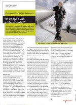Opzoomer Mee coördinator Johan Janssens zegt bij het streven naar sociale samenhang vaak ‘romantische doelen’ worden gesteld, als mantelzorg en integratie. Opzoomer Mee wil afstappen van grote woorden en ambities benoemen die realiseerbaar zijn en meetbaar. noot
‘Als je ons vraagt wat Opzoomeren betekent is het heel simpel’, zegt Janssens: ‘wat heeft een straat nodig aan onderling contact wil je daar prettig en sociaal kunnen leven. Basis dat je elkaar kent, elkaar groet en wordt gekend. Daar wil Opzoomeren zich op richten.’
Janssens noemt dit ook de sociale component van veiligheid, het thema dat centraal staat in de verkiezingscampagne in 2002. Hij verwacht in de toekomst veel meer aandacht voor bewoners die de stad leefbaar maken. ‘Mensen die daarvoor het initiatief nemen zouden eigenlijk elk kaar jaar een bezoek van Opstelten moeten krijgen om hen te bedanken.’
5 2002 multiculturele samenleving
‘Geen racistische taal op straat’ is een van de regels in de Korenaardwarsstraat. De meeste kinderen in de straat zijn van Marokkaanse en Kaapverdische komaf.
De verandering van de bevolking trekt een wissel op bewoners die lang in de buurt wonen. Een grote groep verhuist uit oude wijken naar nieuwbouwwijken aan de randen van de stad. Achterblijvers voelen zich vaak geïsoleerd en ontheemd door de komst van grote groepen buitenlanders. Veel oudere bewoners wijzen nieuwkomers aan als de bron van de overlast en van ‘de verloedering van de buurt’. De sociale structuur valt uiteen, gezamenlijke ontmoetingspunten, vertrouwde winkels verdwijnen.
Turkse, Marokkaanse en Kaap Verdische migrantenopbouwwerkers van Delphi in Middelland werken samen met de bewonersorganisatie Middelland in de Werkgroep Migranten. Ze verwerven een eigen ontmoetingsruimte in het Trefcentrum aan de Middellandstraat. De ruimte wordt gebruikt door verschillende groepen die gezamenlijk regels moeten afspreken over sleutelbeheer en openingstijden, gescheiden activiteiten voor mannen en vrouwen en het gebruik van alcohol. Herman IJzerman, wijkpastor die optreedt als coach van de werkgroep Migranten, noemt het Trefcentrum een ‘oefenplaats voor het omgaan met verschillen’.
Hij gaat In gesprek met migranten en met boze autochtone bewoners die protesteren tegen ‘de overname van het Trefcentrum door buitenlanders’. In het Trefcentrum komt ook een ontmoetingsplaats voor ouderen uit de wijk.
Het gesprek over de veranderingen van de buurt is moeilijk, bewoners die klagen over de komst van te veel buitenlanders krijgen snel de beschuldiging van discriminatie en racisme.
Ook opbouwwerkers die pleiten voor een grotere spreiding van migranten wordt voor de voeten geworpen dat ze discrimineren.
 Opbouwwerkers proberen het ongenoegen van bewoners te duiden, de gevoelens van achterstelling en van ontheemding.
Opbouwwerkers proberen het ongenoegen van bewoners te duiden, de gevoelens van achterstelling en van ontheemding.
Sociale Vernieuwing roept op om niet te kijken naar problemen, maar naar mogelijkheden en kansen.
Maar een ambtelijke werkgroep signaleert in 1992, ten tijde van Sociale Vernieuwing, ook het ontstaan van een tweedeling langs etnische lijnen en produceert het programma Rotterdam ongedeelde stad. noot
In 1994 komen de strijdige ontwikkelingen aan de oppervlakte. Duizenden bewoners in alle delen van de stad doen op 28 mei mee met de grote manifestatie Opzoomerdag. Bij de gemeenteraadsverkiezingen in maart van hetzelfde jaar lijdt de PvdA onder aanvoering van Hans Simons en Hans Kombrink een grote nederlaag en verliest een derde van haar zetels. Tegenover het verlies van de PvdA van 6 raadszetels (van 18 naar 12) staat een grote winst van CD/CP die van 2 naar 6 zetels gaat.
De opkomst van de Centrum Partij van Janmaat in de jaren 80 en 90 lijdt tot angst, het wordt geassocieerd het de opkomst van het nazisme in de jaren 30. De CP wordt door andere partijen geïsoleerd en doodgezwegen. Burgemeester Peper krijgt de wind van voren van partijgenoten als hij in gesprek gaat met Wim van Ginneken van de CP, bewoner van de Volmarijnstraat.
Wethouder Meijer GroenLinks spreekt over ‘de kracht van de verschillen’, over veelkleurigheid en het respecteren van verschillende waarden. Hij zet zich in voor gedeelde normen en omgangsregels in het publieke domein.
Pim Fortuyn spreekt in 2002 ongeremd over overlast van Marokkaanse straatjochies, over Turkse families die hun dochters thuishouden van school en over gedwongen huwelijken. Hij legt daarmee de vinger op een zere plek.
Ik had goede contacten met Herman Meijer en met Pim Fortuyn, zegt Ton Huiskens in een terugblik. Ze waren beiden slim en gemotiveerd om de gevolgen van de grote volksverhuizing werkbaar te maken. Hij vindt De verweesde samenleving (1995) van Fortuyn ‘tot de dag vandaag’ een mooie analyse. noot
Huiskens leidde Fortuyn rond langs Duimdrop en Thuis op straat. ‘Hij was hevig geïnteresseerd en je kom met hem goed praten over praktijkdilemma’s.’ Fortuyn begreep dat negatieve verhalen over een buurt de problemen verergeren, het leidt tot het vertrek van groepen mensen die weg kunnen en maakt ruimte voor criminelen. Er ontstaat een spiraal naar beneden: de ‘onderkant’ weet dat slachtofferschap profijtelijk is, werkers zien dat naar ‘probleemwijken’ geldstromen op gang komen.
‘Fortuyn kon tegen kritiek, hij besefte dat het benoemen van problemen niet hetzelfde is als het oplossen daarvan.’ Fortuyn en Pastors zagen dat alleen de harde hand onvoldoende is en dat ook sociaal investeren nodig is, zegt Huiskens. Ze vonden dat de komst van een grote groep conservatieve moslims met bekrompen ideeën over vrijheden die wij nog maar net verworven hadden een stap terug is in de tijd, met ongelijkheid van man en vrouw en agressie tegen homo’s. ‘Godsdienstvrijheid kan geen vrijbrief zijn om anderen hun levensstijl te ontzeggen.’ Ze voelden niets voor aanpassingen van onze manier van leven wegens de aanwezigheid van moslims, met gordijnen in het zwembad en niet meer gemengd zwemmen. ‘Ze wilden daarover discussie en gezien de respons die ze kregen waren ze niet de enigen. Die spanning was en is aanwezig in de buurten waar Thuis op Straat werkte. De discussie maakte een meer realistische benadering van de problemen mogelijk die de grote volksverhuizing meebrachten.’
Fortuyn begreep dat hij me niet moest vragen mee te doen met zijn politieke partij, onderstreept Huiskens. Hij ondersteunde Herman Meijer bij het agenderen van samenlevingsvraagstukken.
Huiskens ziet TOS, Duimdrop en Opzoomeren als initiatieven waarin plek is voor alle Rotterdammers, ook als ze het fundamenteel oneens zijn over belangrijke politieke kwesties. De tegenstellingen zijn binnen deze initiatieven voelbaar, maar ze worden werkbaar gemaakt.
Voorbeeld zijn de reacties op de aanslag op de Twintowers in New York in 2001. In het team van Thuis Op Straat zaten ook mensen die juichend de straat op gingen omdat ‘de Amerikanen een lesje was geleerd’. De emoties liepen in een personeelsbijeenkomst hoog op, het lijkt dan dat de tegenstellingen binnen een organisatie onoverbrugbaar zijn. ‘We vonden elkaar ten slotte op het thema van vergelden en vergeven, een onderwerp uit de dagelijkse pleinpraktijk. Je zorgt dat de spanning werkbaar wordt, dat een buurt weerbaar wordt tegen opstokerij die tegenstellingen onoverbrugbaar maakt en de kwaliteit van het bestaan aantast.’ Het wordt later benoemd als ‘werken aan verbinding’ en ‘sociale integratie’.
Fortuyn stelt zich ook op als populist, met leuzen over ‘de elites van de multiculturele samenleving’. Hij bekeert zich van socialist tot aanhanger van de vrije markt en pleit in de voetsporen van Reagan en Tatcher voor een kleine overheid, geprivatiseerde bedrijfsmatig werkende overheidsdiensten en bezuinigingen op sociale voorzieningen. In het nieuwe conservatisme is niet het communisme maar de Islam de vijand van het vrije Westen. Er is ‘een botsing van beschavingen’, met een bedreiging van de moderniteit. noot
Fundamentalistische moslims in achterstandswijken maken zich op voor een strijd tegen de Nederlands cultuur, aldus Fortuyn. Hij spreekt in 1996 over een dreigende ‘Islamisering van de Nederlandse cultuur’.
In de ogen van Fortuyn staat de meest vitale Nederlandse waarden op het spel: de scheiding tussen kerk en staat en de gelijkheid tussen seksen. ‘Het cultuurrelativisme dat gangbaar is geworden maakt van Nederlanders een krachteloos volk, zonder gemeenschappelijke idealen, zonder bewust beleefd stelsel van normen en waarden’.
In een interview met De Volkskrant (9 februari 2002) zegt hij: ‘Als ik het juridisch rond zou kunnen krijgen, dan zou ik gewoon zeggen: er komt geen islamiet meer binnen! Maar dat kan ik niet rondkrijgen. De islam is achterlijk, ik zeg het maar, het is gewoon een achterlijke cultuur.’
De uitslag van de verkiezingen van 2002 is voor velen een schok. Leefbaar Rotterdam komt met 17 zetels in de raad, de PvdA gaat van 15 naar 11 zetels. Ook ‘klein links’ verliest, GroenLinks gaat van 4 naar 3 zetels en de SP van 4 naar 1. De VVD wordt gehalveerd van 9 naar 4 zetels. noot
PvdA voorman wethouder Hans Kombrink constateert dat partijen van links tot rechts hebben verloren. ‘Een effect à la Berlusconi’. Hij wil geen etiketten plakken van racisme of fascisme, maar dit verschijnsel zagen we voor het laatst in de jaren dertig van de vorige eeuw. ‘Misschien is de parallel dat er een zoektocht gaande is naar een sterke man die durft te zeggen waar het op staat.’
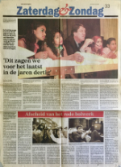Kombrink spreekt van ‘vliegwieleffecten’. De plotselinge opkomst van Fortuyn heeft alle ergernis over de verloederde, vuile, onveilige stad in stemmen omgezet. Hij noemt ook 11 september. ‘Sinds die dag combineren mensen alle problemen met de multiculturaliteit van de stad. Sinds de aanslagen in de VS leeft er in de stad een onbestemde dreiging dat er een onzichtbare vijand is.’ De verkleuring van Rotterdam is opgeschoven in de richting van de tuinsteden, de blanke man, de vijftigplusser, herkende zijn eigen stad niet meer. noot
Kombrink voegt toe dat het verhaal over ‘de dominante positie van de PvdA in Rotterdam’ sinds de verkiezingen van 1994 niet meer op ging. ‘De PvdA beschikte in 1994-1998 over 2 van de 6 wethoudersposten, in 1998-2002 over 3 van de 6.’
Na de verkiezingen van 2002 kijkt oud-wethouder Meijer terug.
Meijer ergert zich aan de verhalen die na de verkiezingen de ronde doen over ‘de mensen in de wijken’. ‘Ze bedoelen dan autochtonen die kankeren. Journalisten die schrijven dat gewone bewoners niet gehoord zijn en nu stemmen op Fortuyn.’ Het is niet waar, stelt hij dat de autochtonen in de oude wijken zulke problemen hebben met allochtonen. De grote percentages zitten in IJsselmonde, in Vreewijk, in doorgangswijken en witte enclaves. ‘De mensen met de minste contacten met allochtonen stemmen het meest op Fortuyn.’
Meijer wijst er op dat Rotterdam te maken heeft met criminaliteit en gewelddadigheid maar niet met rassenrellen. ‘We hebben geen no-go area’s in Rotterdam zoals in Birmingham of Antwerpen.’ Hij wijst op de wijkaanpak, stadsetiquette en de Opzoomerbeweging en op ‘de mensen die constructief met iets bezig zijn, een normale verhouding hebben met het bestuur en het opbouwwerk, een niet te onderschatten tegenpool van de Fortuyn-stemmers’. Hij wijst ook op Thuis op straat dat op dertig pleinen in moeilijke delen van Noord, Crooswijk, Delfshaven, Hoogvliet, Charlois en Feijenoord werkt om het gebruik van de pleinen zo te organiseren dat groepen elkaar niet in de weg zitten.
De oud wethouder Volkshuisvesting constateert ook dat met het opheffen van de projectgroepen stadsvernieuwing in 1992 en de overdracht van de woningverbetering aan corporaties grote gaten zijn gevallen in de stadsvernieuwing. Op sommige plekken in Bospolder en Spangen is tien jaar niets gebeurd. Hij stelt vast dat de huisvestingswet spreiding op basis van etniciteit niet toe staat. De bouw van duurdere woningen in oude wijken kan autochtone bewoners vasthouden, 85% van de bouwproductie in Rotterdam is anno 2000 koopwoning.
Meijer is het eens met Fortuyn dat er te weinig is nagedacht over immigratiepolitiek. Er is een spanning met de verzorgingsstaat. ‘Nieuwkomers moeten niet automatisch recht hebben op een uitkering. Mensen moeten hun burgerschap en hun rechten opbouwen door eigen inspanning’. Het beleid van de overheid moet gericht zijn op het ontwikkelen van succesvol burgerschap van nieuwkomers.
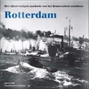Rotterdam, het vijfentwinstigste Jaarboek voor het democratisch socialisme geeft in 2004 een analyse van de verkiezingsnederlaag van de PvdA in Rotterdam in 2002. noot
Gastredacteur van het Jaarboek is Marijke Linthorst. Ze deed in de jaren 90 onderzoek naar jeugd- en onderwijsvoorrangsbeleid in Rotterdam en was rapporteur van de Taakgroep Sociale Infrastructuur. Ze vraagt zich af ‘hoe het komt dat het PvdA-bestuur van Rotterdam de problemen niet tijdig onderkende en niet serieus op de klachten van bewoners is ingegaan’.
Met het verhaal van Pim Fortuyn over de islam, Nederland is vol en de verplichte emancipatie van moslimmannen had de kiezer eindelijk iemand gevonden die riep wat er onder de mensen leefde, zegt Metin Celik. Celik werkt bij de politie, hij was actief in de bewonersorganisatie het Nieuwe Westen en is vanaf 1998 PvdA-raadslid. Celik maakte de uittocht mee van ‘witte Hollanders’ uit de wijk vanaf de jaren 80, gevolgd door het sluiten van de bakker en de apotheek. Het riep bij bewoners het gevoel op van onmacht, ze voelden zich door de overheid in de steek had gelaten. Hij noemt een voorbeeld. ‘Al twintig jaar heb ik van de ouders van kinderen klachten gehoord over openingstijden van buurthuizen en speeltuinen. Nooit is er iets gedaan met die klachten’. In de jaren 90 werden ook koopwoningen gebouwd in oude wijken maar de beoogde effecten daarvan laten lang op zich wachten. Het stadsbestuur hield zich teveel bezig met langetermijnvisies en grote projecten, concludeert Celik, bewoners werden daardoor niet geïnspireerd.
Mensen herkenden hun stad niet meer, zegt ook oud PvdA wethouder Henk van der Pols. Ze voelden zich er niet meer thuis. De PvdA liep in de jaren 70 voorop bij het agenderen van de sociale problemen van de gastarbeid en immigratie. ‘We liepen met het spreidingsbeleid op tegen een muur in Den Haag. Daarna hebben we teveel vertrouwd op de stadsvernieuwing voor oplossingen. In de jaren 90 is het misgegaan.’ Een nieuwe generatie binnen de PvdA heeft een grote afstand van de leefwereld van bewoners. ‘Immigratie wordt nu verdedigd, Delfshaven wordt betiteld als kraamkamer van de multiculturele samenleving.’
Het gesprek over problemen wordt bemoeilijkt door een enorme vrees voor stigmatisering en discriminatie van buitenlanders, zegt deelraadsbestuurder Dominic Schrijer. ‘We hadden in Charlois een bestuurder die direct opstond en de deur uitliep als een bewoner zei: het komt door de buitenlanders. Als u zo praat, wil ik niet met u in discussie, zei hij.’ Sociale woningbouw, betaalbare huisvesting voor Jan met de pet, was in grootstedelijke PvdA-kringen onaantastbaar. ‘Dat daardoor een concentratie van kansarmoede ontstond in sommige buurten hoorde men liever niet of werd over het hoofd gezien.’ De snelle verandering van de bevolkingssamenstelling werd geduid als kleurverandering maar kwam feitelijk neer op een concentratie van armoede. ‘Als er dan geen actief partijkader woont in die wijken, want ook dat kader was inmiddels weggetrokken, dan ervaart het bestuur die verandering niet aan den lijve.’
Schrijer deelt de analyse van Reijndorp en van der Zwaard in het Jaarboek over het ontstaan van een nieuwe middenklasse. De meeste eengezinswoningen in Rotterdam worden anno 2004 gekocht door Turken en hindoestaanse Surinamers. Ze vormen ‘nieuwe identiteitsdragers’ voor Rotterdam, met een transitie naar het Rotterdam van de toekomst als de meest jonge, dynamische en kleurrijke stad van Nederland. Maar Schrijer ziet ook wijken die ‘door bodem van het fatsoenlijk bestaan zijn gezakt’. Daar moet de balans worden hersteld door een vestigingsbeleid dat tijdelijk kansarmen weert.
Integratie met behoud van eigen cultuur had voor allochtonen en autochtonen moeten gelden, zegt redacteur Marijke Linthorst. ‘Er was geen oor voor de klachten over de sociale ellende door een afkeer van betutteling en angst voor extreem rechts. Er was een klimaat ontstaan waarin achterstanden en verloedering in sommige wijken bijna gelaten aanvaard werd als onvermijdelijke keerzijde van de ontwikkeling van Rotterdam tot wereldstad.’ De gelatenheid gold niet alleen complexe problemen als de herstructurering van wijken, maar ook de relatief simpele als het dumpen van vuilnis op straat. Bewoners en medewerkers van de Roteb ergerden zich aan het ontbreken van sancties.
De bestuurlijke organisatie was niet bevorderlijk voor een goede waarneming van dit soort klachten. ‘Het gemeentebestuur heeft zwaar onderschat welke impact de verloedering had. We hebben dat bestuurlijk niet waargenomen’, zegt oud wethouder Kombrink.
Het gemeentebestuur ging zich in de jaren 90 concentreren op het strategisch beleid voor Het Nieuwe Rotterdam, de deelgemeenten richtten zich op de communicatie met de bevolking, het wijkbeheer en het welzijnsbeleid. Er waren omstreden plannen voor de omvorming van de gemeente Rotterdam tot een stadsprovincie.
In 1994 is geprobeerd om de winst van extreem rechts dood te zwijgen, zegt Linthorst, dit was in 2002 met de opkomst van Leefbaar Rotterdam niet mogelijk. Ze signaleert dat het nieuwe College daadkracht vertoont: huisjesmelkers worden aangepakt, er wordt opgetreden tegen jongeren die de buurt onveilig maken en op vervuiling van de openbare ruimte staan sancties. ‘We moeten elkaar weer durven aanspreken’, zegt de rapporteur van de Taakgroep Sociale Infrastructuur. ‘Als de overheid haar burgers niet aanspreekt, waarom zouden medeburgers dat dan wel doen? Met het programma Mensen maken de stad probeert het nieuwe College de betrokkenheid van mensen bij elkaar en bij hun omgeving te stimuleren.’
6 Veiligheid en straataanpak: Mensen Maken de Stad
In 2002 wordt een College gevormd van Leefbaar Rotterdam, CDA en VVD. Het nieuwe stadsbestuur vertaalt onder leiding van burgemeester Opstelten de maatschappelijke tegenstellingen in een veiligheidsprobleem. Maatregelen zijn gericht op ‘herovering van de publieke ruimte’ en ‘bemoeizorg’ achter de voordeur.
Interventieteams richten zich op ‘hotspots’, gebieden met overlast, criminaliteit, malafide huiseigenaren, stagnerende stadsvernieuwing en verkrotting. Er wordt een Persoons Gerichte Aanpak PGA ontwikkeld met huisbezoeken, controles van identiteit en van uitkeringen, en een zorgaanbod. Er komt ook een lijst van 600 ‘veelplegers’.
De hotspot-aanpak bouwt voort op een methodiek voor het signaleren van leefbaarheidsproblemen in kwetsbare wijken zoals de Tarwewijk. noot
Een Veiligheidsindex geeft een overzicht van de veiligheidssituatie per wijk, met gegevens over criminaliteit en overlast en met metingen van de veiligheidsgevoelens van bewoners. In Wijkveiligheidsactieplannen worden acties van justitie, politie, gemeentelijke diensten en maatschappelijke organisaties afgestemd. Het veiligheidsbeleid is uitvoeringsgericht, de voortgang en knelpunten worden inzichtelijk gemaakt met tweejaarlijkse rapportcijfers voor de veiligheid van de wijk.
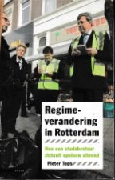Voortrekkers zijn de ‘stadsmariniers’, een nieuwe type ambtenaar met mandaat voor het aanpakken van knelpunten en het doorbreken van impasses. De stadsmariniers staan los van de gemeentelijke diensten en rapporteren aan het nieuwgevormde programma-bureau Veiligheid dat een directe lijn heeft met Burgemeester en Wethouder Veiligheid. Via ‘frontlijnsturing’ wordt beleidsvorming afgestemd op de uitvoering en aanpak in buurten.
Onderzoeker Tops spreekt van een ‘regime-verandering’. noot
De hotspot-aanpak komt in de plaats van de Strategische Wijkaanpak van het vorige college. Marco Pastors, leider van Leefbaar Rotterdam, wordt wethouder ‘Fysieke infrastructuur’ (voorheen Stadsvernieuwing en Volkshuisvesting).
Dominic Schrijer, deelraadsbestuurder in Charlois, wijst op de verarming van de bevolking van Pendrecht en Zuidwijk als gevolg van de veranderende bevolking. Hij pleit voor een grotere spreiding van kansarme bewoners. Wethouder Pastors reageert met een roep om een ‘allochtonen-stop’.
De oproep van Pastors zet de coalitie met CDA en VVD onder spanning. De Leefbaar-eisen voor spreiding van allochtonen en een stop op de komst van immigranten zijn niet opgenomen in het Collegeprogramma.
Uitkomst is een maatregel met een tijdelijke beperking van het aantal minder draagkrachtige bewoners (inkomens met minder dan 120% van het minimuminkomen) in buurten die onder druk staan, later bevestigd in de zgn. ‘Rotterdamwet’.
Deelraadsvoorzitter Tom Harreman is een van de deelnemers aan een grote demonstratie in juli 2002 van bewonersorganisaties in Delfshaven tegen de drugsoverlast van de prostitutiezone aan de Keileweg. Het College kiest een nieuwe benadering, de Keileweg wordt benoemd als ‘drugsprobleem’ in plaats van als ‘prostitutieprobleem’. Verspreid over de stad worden onder leiding van wethouder Marianne van den Anker Leefbaar Rotterdam panden ingericht voor Intensief Beschermd Wonen IWB waar de vrouwen worden ondergebracht. De Keileweg sluit in 2006. Wethouder Jantine Kriens PvdA zet het opvangbeleid met beschermd wonen voort.
De nieuwe ‘harde aanpak’ van onveiligheid en overlast van Leefbaar Rotterdam krijgt brede politieke en maatschappelijke steun.
Burgemeester Opstelten labelt Rotterdam als ‘de stad die de verkeerde lijstjes aanvoert’, met de goedkoopste woningvoorraad, de hoogste werkloosheid, de slechtst opgeleide beroepsbevolking en het laagste gemiddelde inkomen van de grote steden.
Het gemeentebestuur verleent in 2006 opdracht voor het schrijven van een onderzoek naar de recente stadsgeschiedenis van 1975 (start van stadsvernieuwing) tot 2005. Daarbij wordt gevraagd aandacht te besteden aan Rotterdam als aanvoerder van ‘de verkeerde lijstjes’ en aan de uitslag van de verkiezingen van 2002. In het Voorwoord schrijft stadshistorica Els van den Bent: ‘Daarachter school de vraag hoe het kwam dat alle bestuurlijke inspanningen van de laatste dertig jaar nauwelijks tot een lagere plaats op die lijstjes hadden geleid, of misschien zelfs de oorzaak waren van een grote onvrede die mogelijk de uitslagen van de verkiezingen diepgaand had beïnvloed.’ noot
Het Collegeprogramma heeft naast de veiligheidspijler ook een sociale pijler. CDA wethouder Sjaak van der Tak, in 2004 opgevolgd door Leonard Geluk, ontwikkelt een programma voor Sociale Integratie.
Tops signaleert dat de offensieve taal van aanvalsplannen en mariniers vaak wordt verzacht door toevoegingen uit ‘het communitaristisch repertoire’. ‘Kijkend naar het politieke discours zien we een mengeling van communitaristisch (‘samenlevingsopbouw, normen en waarden’) en leefbaar (‘harde aanpak, nieuwe bezems vegen schoon’), een mengeling van ‘zacht’ en ‘hard’ van zorg, preventie en repressie.’ noot
Enkele voorstellen die de Taakgroep Sociale Infrastructuur vlak voor de verkiezingen op tafel heeft gelegd worden overgenomen. Het voorgestelde ‘mariniersmodel’ voor de aanpak van sociale problemen, met ‘de beste mensen in de frontlijn’, keert terug in de ‘stadsmariniers’ die het voortouw krijgen in onveilige buurten.
Belangrijk onderdeel van de sociale pijler van het Collegeprogramma is het programma Mensen maken de stad MMS. Het wordt een vervolg van de Stadsetiquette. Het nieuwe programma voor samenlevingsopbouw richt zich op het vergroten van de sociale veiligheid. Doel is dat bewoners gezamenlijk straatafspraken maken. Samen met gemeentelijke diensten en politie worden straatagenda’s opgesteld met maatregelen tegen criminaliteit, onveiligheid en vervuiling.
Opbouwwerkers krijgen een centrale rol bij het tot stand brengen van de ‘sociale binding in straten’. Mensen Maken de Stad wordt gekoppeld aan Opzoomer Mee, het is een stedelijk project in aanvulling op het opbouwwerk in de deelgemeenten. Projectleiders zijn René Diekstra en Johan Janssens.
‘Ik sprong op de bagagedrager bij René Diekstra, of hij bij mij? Ik heb veel van hem geleerd’, zegt Johan Janssens.
Beleid van de vorige wethouder Meijer bij Opzoomeren was om ruimte te geven aan Opzoomer Mee en niet zelf als gemeente de uitvoering ter hand te nemen. Ambtenaren van de bestuursdienst Gerard Riesthuis en Gerard Smulders traden op als ‘frictie-monteurs’ in het veld.
De opstelling van de gemeente wordt tijdens Leefbaar Rotterdam meer sturend. Het nieuwe programma voor Sociale integratie en Mensen Maken de Stad werkt met ‘targets’ voor straatafspraken. Ook voor Opzoomeren worden targets geformuleerd.
Opzoomer Mee wijst directe invloed van de projectleider Sociale integratie op het Opzoomeren af. Jansens: ‘De gemeente beslist om Opzoomer Mee wel of niet te subsidiëren, de verantwoordelijkheid voor de uitvoering ligt bij Opzoomer Mee.’
Voor de uitvoering van MMS worden opbouwwerkers gerekruteerd. Opzoomer Mee gaat zo’n 40 werkers coachen. Opbouwwerkinstellingen in de deelgemeenten hebben moeite met de rol van uitvoerend programmaleider van Opzoomer Mee. Janssens: ‘Terugkijkend was het misschien een sterkere optie geweest om iedere straat onder voorwaarden een budget te geven voor MMS van zeg 25.000 euro, met de mogelijkheid om zelf de gewenste ondersteuning te kiezen. Het was nu teveel gekoppeld aan het opbouwwerk.’
Bij de start van een proefproject in 2003 voor de straataanpak is uitgangpunt dat extra opbouwwerk-ondersteuning voor MMS ingezet wordt in straten waar al enige sociale activiteit aanwezig is, b.v. door Opzoomeren. Straatfeesten en barbecues moeten bewoners zelf organiseren als ze dat willen.
Deelgemeenten signaleren dat de extra opbouwwerkinzet voor MMS door deze keuze terecht komt in straten waar bewoners al initiatieven nemen en niet in de straten met de grootste problemen.
De discussie leidt tot ‘een herontdekking van het Opzoomeren’, zegt projectleider Janssens. Duidelijk wordt dat Opzoomeren meer is dan feestjes in de straat. ‘Opzoomeren en straatactiviteiten leiden tot sociale contacten, tot enige sociale controle en zorg voor elkaar.’ De toegevoegde waarde van straatafspraken is dat mensen elkaar makkelijker kunnen aanpreken.
Het opbouwwerk gaat in een hogere versnelling. noot
Typische straatafspraken zijn: we groeten elkaar, we verwelkomen nieuwe bewoners en we organiseren driemaal per jaar een straatactiviteit. Daaraan wordt een afspraak toegevoegd met een hoger ambitieniveau zoals ‘we houden de straat schoon’. Daarbij kunnen bewoners kiezen uit het menu Schoon en heel van Gemeentewerken en Roteb.
De straataanpak krijgt een methodische basis. De doelen van de straataanpak zijn gebaseerd op een ‘straatladder’. Een straat klimt op van agressie, vermijding en onverschilligheid (niveau -2, -1, 0), via actief contact maken (+2) en samen straatactiviteiten organiseren (+4), naar leefregels afspreken (+5), samen zorgen voor de straat (+6), en afspraken met diensten (+7).
De straatladder wordt gebruikt om doelen te bepalen voor straten. Deze doelen zijn ook ‘targets’, prestatie-eisen van de gemeente naar MMS en Opzoomer Mee.
In 2006 verandert de hoogste trede +7 van de straatladder van ‘contacten met diensten’ in ‘zelfbeheer’: bewoners organiseren activiteiten zonder extra ondersteuning.
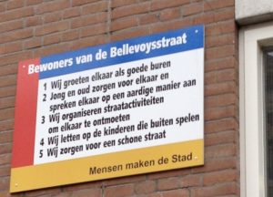In de straat worden twee grote borden opgehangen met de afspraken die gemaakt zijn: ‘Bewoners van deze straat groeten elkaar en verwelkomen nieuwe bewoners.’, ‘Wij doen ons huisvuil in daardoor bestemde containers.’ ‘Wij letten op elkaar woning.’, ‘Wij houden onze portieken schoon.
{kind=link}
Start van de straataanpak is een sociale diagnose van de straat. Daarna volgt de vorming van een ‘gangmakersgroep’ en vervolgens het maken van een straatagenda
Het programma heeft omschreven werkmethoden voor de sociale diagnose en de ‘straatkeuring’ die zijn vastgelegd in protocollen. Er zijn vijf werkprocessen benoemd om een straat te laten klimmen op de straatladder: vorming van een gangmakersgroep, organiseren van activiteiten in de straat, brede communicatie in de straat, organiseren van steun voor het straatnetwerk en een straatkeuring of kwaliteitsmeting.
Valkuil blijkt om alleen naar de gangmakersgroep te kijken en de rest van het straatnetwerk uit het oog te verliezen. Risico is dat een klein groepje de toon zet en een barrière vormt voor de deelname van anderen. De opbouwwerker moet simultaan werken met initiatiefnemers en andere bewoners in een straat.
Targets van MMS voor 2006 zijn 1600 straten met een activiteitencultuur, 250 straten met straatafspraken en 150 straten met straatagenda’s en afspraken met diensten.
De nieuwe straataanpak is intensief, het vraagt ‘legers opbouwwerkers’, zegt Johan Janssens. Per 4 straten is 1 opbouwwerker nodig. Het reguliere wijkopbouwwerk moet het stokje overnemen na de tijdelijke extra investering van MMS. Aan werkbijeenkomsten van MMS, ‘timmerdagen’, doen ruim 40 opbouwwerkers mee. Janssens noemt MMS ‘een diepte investering in samenlevingsopbouw’. Het programma biedt veel kansen aan de oude en een nieuwe generatie opbouwwerkers. ‘We zijn nog maar net begonnen.’
In een rondetafelgesprek bespreken opbouwwerkers hun ervaringen met Mensen maken de stad. noot
Opbouwwerker Addie Bergwerff vindt MMS een goed programma omdat je echt terug gaat naar bewoners en de relaties tussen bewoners. Je merkt dat mensen daar behoefte aan hebben. Verschil met Opzoomeren is dat de opbouwwerker veel meer zelf het initiatief neemt en het proces organiseert. Het blijkt dat in veel straten niet vanzelf bewonersinitiatieven ontstaan. Mensen geven vaak aan dat veel problemen in een straat te maken hebben met gedrag van bewoners en met gebrek aan onderlinge communicatie. Daar zijn ze zich zeer van bewust. Maar ze weten vaak niet goed hoe je met anderen in contact kunt komen om problemen aan te pakken. ‘Dat organiseer je als opbouwwerker. Dat je binnen MMS in een voorgeschreven structuur kunt werken is handig.’ In Pendrecht is de woningcorporatie partner van Mensen maken de stad, maar dat heeft nog niet geleid tot het snellere reparaties van kapotte lampen en gebroken ruiten.
Thessa Bakker heeft een haat-liefde verhouding met MMS. Aan de ene kant is het goed dat opbouwwerk afgerekend wordt op de tijd die je ergens in steekt, maar in het begin was het devies van het projectbureau vooral: leveren, leveren! De straatkeuring werkt erg goed, je moet verantwoorden wat je gedaan hebt met de bak geld die je als straat gekregen hebt en aangeven hoe je geprobeerd hebt andere groepen te betrekken. ‘Bewoners kijken kritisch naar zichzelf en wij worden als opbouwerkers ook beoordeeld.’
Uit de straatdiagnose blijkt dat bewoners de straat vaak hoger inschatten op de straatladder dan professionals. Een flatgebouw in Pendrecht heeft een negatief imago, met veel verloop. Wat blijkt? Mensen wonen er naar hun zin, ze houden de deur voor elkaar open als je binnenkomt met de kinderwagen. Er zijn allerlei problemen maar overheersende sfeer is: we laten elkaar in onze waarde. Als je doorvraagt geven de mensen wel aan dat het goed zou zijn als er meer verband zou zijn en als je samen een beetje zou zorgen voor de flat. Maar dat lukt vaak niet, zelfs in straten met veel activiteiten is een derde nodig om een vergadering te organiseren.
De opbouwwerker trekt ook grenzen, zoals bij agressieve jongerengroepen die niet uit de buurt komen en bekenden zijn van de politie. ‘Ik ga niet om elf uur ’s avonds de straat op.’
Na een ruzie in de straat oefent Mounaim Abdelkhaldi met een groepje bewoners en jongeren met het aanspreken van elkaar. Ze spelen de situatie na en keren daarna de rollen om: bewoners spelen jongeren en jongeren de bewoners. ‘Later kwam een jongere naar me toe,’ zegt Abdelkhaldi, ‘hij zei: wat we toen gedaan hebben werkte.’
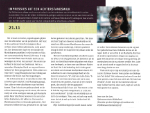
Opbouwwerkster Ireen van der Lem deelt in 2005 haar ervaringen in Impressies uit Middelland, een maandelijkse column in Nieuw Rotterdams Tij. Ze is ook coördinator MMS voor opbouwwerkorganisatie Delphi. In haar column beschrijft ze ‘hoe het collegebeleid op straatniveau uitwerkt’.
Tijdens het Suikerfeest werven bewoners van de Joost van Geelstraat steun voor straatafspraken. Een oudere dame vindt het een goed idee om elkaar te groeten. ‘Maar als je een moslim groet,’ zegt ze, ‘dan word je niet teruggegroet.’ Het blijkt haar niet zelf overgekomen te zijn, ze had het gehoord op tv.
Verdachte zakken gaat over ‘de honderden keren dat we tijdens de Campagnes Schoon bewoners vertelden hun vuilniszak nooit naast de container te zetten’, over boetes en reacties van bewoners, de dienst Stadstoezicht en de Roteb.
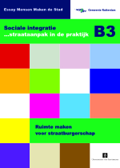 Onderzoekers Uitermark en Duyvendak maken de balans op van de straataanpak. Ze constateren dat Rotterdam als laboratorium voor samenlevingsopbouw een nieuwe stap zet met een ‘assertief’ sociaal programma. Er worden dingen in gang gezet, sociale cohesie is geen doel maar middel bij het bevorderen van veiligheid en fatsoen. Opbouwwerkers moeten op zoek naar nieuwe groepen bewoners in plaats van aan te sluiten bij de paar actieve mensen die altijd wel te vinden zijn in een straat. De onderzoekers concluderen dat integratie en ‘straatburgerschap’ waarbij bewoners zelf verantwoordelijkheid nemen voor hun omgeving alleen gedijt als de overheid langdurig investeert en ‘ruimte maakt’ voor stadsburgerschap. noot
Op basis van observaties van 20 straatkeuringen concluderen Uitermark en Duyvendak dat met de inspanning van opbouwwerkers gangmakersgroepen ontstaan die gemêleerd zijn qua etniciteit, leeftijd en religie. Er worden netwerken gevormd met instellingen en diensten. Ook worden gedragsnormen ontwikkeld. ‘Door een proces waarbij bewoners bij elkaar komen en hun belangen en wensen met elkaar proberen te verenigen, realiseert men zich dat het mogelijk en wenselijk is om rekening te houden met anderen.’
De onderzoekers concluderen dat MMS sociale integratie bevordert door het vertrouwen van bewoners in elkaar te versterken en actief burgerschap te stimuleren. De onderzoekers zien ‘heemding’, de straat wordt ‘onze straat’ en de collectieve weerbaarheid neemt toe. Het toe-eigenen en de ‘parochialisering’ van de publieke ruimte leidt tot meer ogen op straat en het tegengaan van criminaliteit.
De straat vormt een complex domein. Sociale contacten liggen voor veel bewoners buiten de directe omgeving. Groepjes die actief worden in de straat kunnen ‘kliekjes’ vormen die anderen buitensluiten en zo de tegenstellingen vergroten. Opbouwwerkers moeten zoeken naar heterogene netwerken om een andere dynamiek teweeg brengen. Bij een snelle vorming van gangmakersgroepen worden opbouwwerk-principes verwaarloosd: het oog hebben voor alle belangen, en zeker voor ‘het zwakste belang’. De onderzoekers waarschuwen voor hoge verwachtingen van spontane initiatieven, ‘burgerschap moet worden aangeleerd’.
Belangrijk voor de diversiteit van straatactiviteiten en gangmakersgroepen is dat mensen op eigen wijze actief kunnen zijn. Ze kunnen meepraten en meedoen. De ‘multiculturele barbecue’ waarbij allochtone vrouwen zorgen voor de hapjes is geen bevestiging van etnische scheidslijnen maar een vorm van inclusiviteit. In de publieke discussie over integratie staan religieuze verschillen centraal, bij straatactiviteiten en het bevorderen van straatburgerschap speelt dit geen rol.
De onderzoekers concluderen dat gangmakers in een straat kunnen zorgen voor ‘zwakke verbanden’ tussen andere straatbewoners. Ze vervullen een scharnierfunctie tussen de straat en instanties. Of en hoe goed MMS deze functies kan vervullen is afhankelijk van de medewerking van diensten en de aanwezigheid van een gangmakersgroep met een publieke oriëntatie. ‘Samenlevingsopbouw, zeker in achterstandswijken is geen geringe opgave. Straatburgerschap veronderstelt dat er hard aan gewerkt moet worden, en zeker niet alleen door burgers zelf. Mensen maken de stad, mits de stad van mensen burgers maakt.’
Ook Diekstra rapporteert positieve resultaten op basis van keuringen van 85 straten, met een toename van het onderling contact en van vertrouwen in andere bewoners en in organisaties. Het leidt ook tot ‘beheerst gedrag’ (minder overlast en problemen) en toename van ‘binding, vertrouwen en wederkerigheid’. noot
Diekstra signaleert ook dat de straataanpak bewoners uiteenlopende mogelijkheden biedt om mee te doen: als contactpersoon, als signaleerder of ‘geweten’ van MMS in een portiek, als klusser, als drager van activiteiten of als sociale leider.
Opbouwwerkers brengen de participatie van bewoners in kaart en noteren van deur tot deur talenten en belemmeringen. De gegevens worden opgeslagen in een elektronische sociale kaart van de straat. Het is instrument voor opbouwwerkers dat niet gedeeld wordt met derden.
Kwaliteitsbewaking en coaching van opbouwwerkers bij de werkmethoden van MMS is belangrijke factor voor succes, aldus Diekstra. Opbouwwerkers stimuleren bewoners om zich aan straatafspraken te houden, ze waarderen goed gedrag en confronteren bewoners ook als ze zich niet aan straatafspraken houden. ‘Voor veel opbouwwerkers is het werken met normen nieuw, het is dan ook een continu aandachtspunt in hun coaching.’
De projectleider signaleert dat de inzet arbeidsintensief is, risico is dat ‘de kosten op lange termijn bij een groot volume van straten niet zijn op te brengen’. Risico’s zijn ook wisselingen en wegvallen van werkers. Diekstra vraagt zich ook af of de termijn waarin straten toewerken naar zelfstandigheid en zelfredzaamheid realistisch is. ‘Kunnen straatnetwerken uiteindelijk zichzelf in stand houden?’
Uitermark en Diekstra gaan in discussie over burgerschapsvorming en een gemeenschappelijke gedragscode.
Uitermark is sceptisch over de borden in de straat waar de gedragsregels op staan, bewoners blijken niet te weten wat erop staat, een kleine groep is bezig met die afspraken. Kun je burgers niet beter aanspreken op een bepaald belang in de buurt?
Diekstra noemt het afstemmen op elkaars belangen ‘gemeenschapsvorming’. Je zoekt gangmakers met netwerken die dat uitstralen. ‘In Rotterdam hebben we dat nog niet genoeg in de vingers.’
Uitermark vraagt zich af of je als overheid zo’n gigantische inspanning moet verrichten om iedereen bij actieve burgerschap te betrekken. Moet je niet gewoon accepteren dat in sommige wijken onverschilligheid blijft bestaan?
Soms wel, is de reactie van Diekstra. Maar vaak willen mensen die onverschilligheid niet, bijvoorbeeld vanwege hun kinderen. Dan kan het een cruciaal belang zijn om een gemeenschappelijk belang te vinden om burgerschapsvorming op gang te brengen.
‘Het vergt een grote inspanning, het is een cultuuromslag die tien tot vijftien jaar kost. De Leefbaren hebben te makkelijk gedacht dat dat niet nodig was. Het kost niet veel extra geld. Maar het vergt wel een andere opdracht aan het opbouwwerk. Sociaal werkers moeten in plaats van dat ze allerlei belangengroepen ondersteunen veel meer sociale initiators worden, wevers aan de sociale architectuur. Of nog beter, we moeten sociale architecten opleiden.’ noot
Na de moord op Theo van Gogh in 2004 door een man met islamitische achtergrond ontstaat een hevige polarisatie rond islam en integratie. Jongerenwerkers en opbouwwerkers worden opgeroepen om radicalisering in wijken te signaleren.
Fatima Lamkharrat, opbouwwerker in het Oude Noorden doet, met gemengde gevoelens, mee met de Islamdebatten die het gemeentebestuur in 2005 organiseert.
Ze vindt het verbijsterend en beledigend wat wethouders zeggen over bepaalde groepen. “Islam wordt vooral neergezet als probleem en als belemmering voor integratie. Er wordt niet gekeken naar economische en sociale problemen, zoals uitsluiting van jongeren. Dat werkt de politieke islam in de hand. Dat soort mensen azen op jongens die zijn afgeknapt op de samenleving en nergens meer naar toe kunnen. Zo begint het. Ze bieden een club waar je bij kunt horen.”
In de Islamdebatten komt confrontatie in de plaats van dialoog. noot
Het College van Leefbaar Rotterdam, CDA en VVD toont in 2005 barsten. Wethouder Pastors zet de verhoudingen op scherp door in een interview te waarschuwen voor de invoering van de sharia in enkele deelgemeenten als islamitische partijen, met steun van ‘enkele idioten van Groen Links’, de macht krijgen. De gemeenteraad neemt een motie aan waarin wordt uitgesproken dat wethouder Pastors zich moet onthouden van uitspraken over onderwerpen die buiten zijn portefeuille vallen. Pastors treedt enige tijd later af en wordt lijsttrekker van Leefbaar Rotterdam bij de gemeenteraadsverkiezingen van 2006.
Het veiligheidsbeleid van het College van LR, CDA en VVD wordt breed gedragen. Bert Cremers en Jantine Kriens schrijven in 2004 in een notitie voor de PvdA-fractie dat ‘de PvdA de les van 2002 geleerd heeft’. ‘De PvdA was als geen ander verantwoordelijk voor alle veranderingen in deze stad, zoals de hoogbouw in het centrum, de Kop van Zuid en de Erasmusbrug, maar ook de drugsoverlast in Delfshaven, de criminaliteit in het centrum en gebrekkige inburgering van nieuwkomers.’
Lijsttrekker Peter van Heemst zegt bij de raadsverkiezingen in 2006 dat de PvdA de veiligheidsaanpak zal voortzetten, maar dat het gemeentebeleid socialer moet worden.
De PvdA wordt bij de verkiezingen in 2006 de grootste partij met 18 raadszetels, Leefbaar Rotterdam zakt naar 14 zetels. Belangrijke factor bij de uitslag is de hogere opkomst van allochtonen. Veel Turkse en Marokkaanse kiezers stemmen op kandidaten van de eigen etniciteit.
Er wordt een College gevormd van PvdA (3 wethouders), CDA (2), VVD (2) en Groen Links (1). Het nieuwe College wil de straataanpak ‘voortvarend voortzetten’ in het kader van gebiedsgericht werken. Mensen Maken de Stad sluit aan bij ‘prestatieveld 1’ van de WMO: het bevorderen van sociale samenhang op buurt- en wijkniveau.
Doel is de groei van het aantal straten met straatafspraken en straatagenda’s van 250 naar 500, in vooral minder veilige wijken. De 1.600 Opzoomerstraten moeten kunnen doorgaan met hun activiteiten. MMS wordt sterker verankerd in de deelgemeenten die de ruimte krijgen voor het ‘ombuigen van welzijnswerk en diensten naar de straat’. noot
Hengeveld F. Janssens J. (2010) Mensen maken de stad, beschrijving van de good practice, Movisie
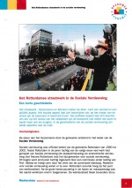Een academie voor Opzoomeren en Stadsetiquette gaat de transfer van kennis en kunde bevorderen. De Opzoomer Academie organiseert in 2008 een masterclass over ‘straatwerk’. De kadercursus staat onder leiding van oud-wethouder Herman Meijer.
Het programma start met een historisch overzicht van het Rotterdamse straatwerk. noot
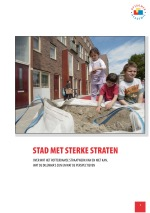Stelling is dat Rotterdam met 1.800 actieve straten, (45% van alle straten), goud in handen heeft. ‘Voor een stad met zo’n diverse bevolking biedt dat zeer welkome mogelijkheden van ontmoeting en herkenning en een basis voor sociale vooruitgang.’ noot
Zelforganisatie van bewoners op het niveau van de straat is ‘een oefening in modern burgerschap.’ Het is een lichte vorm van zelfbestuur, het is een oefening in communicatie, het een vorm van onderlinge zorg, het legt verbindingen met het bestuur van de stad.
De straat heeft beperkingen. Niet iedereen heeft hetzelfde belang bij de straat. Ouders met kinderen hechten een ander gewicht aan de straat dan werkende tweeverdieners zonder kinderen. Zulke verschillen in eigenbelang beperken de reikwijdte van de gezamenlijkheid.
Opbouwwerkers en straatgroepen worden ook voor dilemma’s geplaatst. Hoe om te gaan met ‘weigeraars’, mensen die niet mee willen doen? Organisatie van bewoners kan ook leiden tot uitsluiting van andere groepen. Sturing van bewonersinitiatieven door opbouwwerk kan botsen met ‘spontane’ sociale verbanden. Productafspraken van opdrachtgevers in het straatwerk kunnen een te grote beperking vormen van de vrije ruimte van opbouwwerkers voor samenlevingsopbouw.
Opzoomeren is vooral gericht op het samenleven in een straat. Punt van discussie is of straatnetwerken ook kunnen bijdragen aan zorg voor elkaar? En aan het rondkomen en vooruitkomen van burgers, door netwerken in straten te verbinden met scholing en werk?
Meijer plaatst burgerschap tegenover populisme en het beroep op ‘de gewone mensen’. noot
‘Gewone mensen’ zijn in de plaats gekomen van ‘de kleijne luiden’, ‘de arbeiders’. In de jaren 90 zijn sociale bewegingen uit de jaren 70 verdwenen, veel mensen voelen zich niet meer verbonden met een religie en kerk, een vakbond of een politieke beweging.
Verantwoordelijkheid voor anderen en voor de gemeenschap staat niet centraal In de geïndividualiseerde maatschappij die steeds meer trekken vertoont van een markt. Dominante cultuur wordt ‘uitgaan van jezelf’ en ‘opkomen voor jezelf’.
Een kwart van het electoraat blijkt eind jaren 90 ontevreden. Ze worden getypeerd als ‘moderniseringsslachtoffers’ en ‘afvallers in de merocratie’.
Meijer: ‘Wie iets wil stellen tegenover de populistische werving onder ontevreden ‘gewone mensen’, moet niet proberen hen tevreden te stellen, maar hun recht doen.’
In burgerschap, in een democratische cultuur, is niet mondigheid het sleutelbegrip maar verantwoordelijkheid. Samen verantwoordelijkheid nemen in een straat voor kinderen, voor ouderen is een oefening in ‘straatburgerschap’.
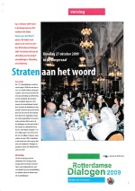Opbouwwerkers en Opzoomer Mee organiseren in 2009 117 straatdialogen waarbij 150 straten zijn betrokken. Een van de thema’s is ‘nabuurschap’. De volgende stellingen staan ter discussie: goede buren behandelen elkaar niet als vrienden, goede buren spreken andermans kinderen aan, goede buren kunnen zonder (deel)gemeente. noot
De Stichting in Dialoog organiseert sinds 2002 de Dag van de Dialoog, met bijeenkomsten om Rotterdammers met elkaar te verbinden. Tot de organisatoren behoort oud-opbouwwerker Benji de Levie. De doelstelling luidt anno 2021: ‘Tijdens zo’n dialoog luister je naar de anderen en zij luisteren naar jou. Jullie delen dromen en ervaringen. Veel deelnemers ontmoeten zo onverwacht hele interessante mensen. En deze mensen zijn interessant, juist omdat ze een andere blik op de wereld hebben.’
7 Binden en verbinden in naoorlogse ‘herstructureringswijken’
De veranderingen van de bevolking en de tegenstellingen die dat meebrengt doen zich rond 2000 het sterkst voelen in naoorlogse wijken. Sloop en nieuwbouw moeten leiden tot een nieuwe mix van meer en minder draagkrachtige en van autochtone en allochtone bewoners. De ‘herstructurering van de woningvoorraad’ moet ook tegengaan dat middengroepen vertrekken uit de stad.
Planning voor 2000-2010 is dat een kwart de woningen van de Zuidelijke Tuinsteden in Zuidwijk, Pendrecht en Lombardijen wordt vervangen door nieuwbouw voor hogere inkomensgroepen. In Hoogvliet worden volgens plan in vijftien jaar 5000 woningen gesloopt in de wijken Westpunt, Meeuwenplaat en Oudeland, een derde van het totaal.
Het woon- en leefklimaat in herstructureringswijken wordt sterk bepaald door verhuisprocessen, sloop- en nieuwbouwactiviteiten en het komen en gaan van groepen bewoners. Bestaande sociale verbanden brokkelen af, bewoners trekken zich terug. Er ontstaan nieuwe netwerken vanuit allochtone groepen en er is weinig uitwisseling tussen verschillende bevolkingsgroepen. Er zijn spanningen en conflicten tussen oudere autochtone bewoners en groepen allochtone jongeren.
 Opbouwwerkers in deze buurten-in-verandering werken op het scherp van de snede. noot
Opbouwwerkers in deze buurten-in-verandering werken op het scherp van de snede. noot
Bewonersparticipatie bij herstructureringsprogramma’s vormt niet het vertrekpunt voor samenlevingsopbouw. Grote verschil met de periode van de stadsvernieuwing in de jaren 70 is dat sloop- en nieuwbouw in naoorlogse wijken niet gericht is op ‘bouwen voor de buurt’, maar vooral op het vasthouden en aantrekken van meer draagkrachtige bewoners. Sociale programma’s in sloopbuurten zijn gericht op toerusting van bewoners voor een goede start in een andere buurt.
De Bewoners Organisatie Zuidwijk verzet zich lang tegen plannen van de woningcorporatie voor sloop van sociale huurwoningen, ze willen renovatie. De BOZ wordt teruggefloten door de achterban, ze willen koopwoningen in de Horstenbuurt en het vertrek van de Antillianen aldus opbouwwerker Joke van Baaren. ‘De verschillende groepen waarmee we werken lopen naast elkaar’, zegt van Baaren. Koopwoningen in het vernieuwde deel van de wijk worden bevolkt door een nieuwe koopkrachtige sociale groep. Buurten die op de nominatie staan om gesloopt te worden bieden tijdelijk onderdak aan uiteenlopende groepen mensen die zijn aangewezen op goedkope huisvesting, waaronder een grote groep Caribische bewoners.
Frank Boerboom, opbouwwerker voor leefbaarheidsprojecten in Zuidwijk en Pendrecht, doet ‘overlast-gestuurd opbouwwerk’ in de Burgen waar veel Antilianen wonen. Hij nuanceert het negatieve beeld van de buurt. Het is altijd gezellig in de straat, als het mooi weer is gaan de tafels naar buiten en spelen mannen domino. ‘Wat Hollanders in het weekend op de camping doen, doen zij hier op straat.’ De opbouwerker treft een klein leefgemeenschapje aan waar mensen elkaar steunen met sleutelen aan auto’s en opvang van de kinderen.
De opbouwwerker zorgt voor een ontmoetingsplek voor de moeders, de vrouwen gaan zich bemoeien met de gang van zaken op de basisschool en nemen de leiding over van de speeltuin. noot
De BOZ speelt een rol in het overleg met deelgemeente en woningcorporatie over de herstructurering van de wijk. Er ontstaat een nieuwe coalitie van mensen die al lang in de wijk wonen en bewoners van de koopwoningen. Bewoners van sloopbuurten vallen daar buiten. noot
Ze zijn positief over de bewoners van de nieuwe koopwoningen, ze zeggen te willen wonen in een gemengde wijk met meer buurtgenoten van Nederlandse afkomst. De onderzoeker waarschuwt dat bezuinigingen op de voorzieningen die contacten bevorderen, zoals het wijkgebouw en de bibliotheek, tot gevolg hebben dat mensen van verschillende afkomst en klasse elkaar minder ontmoeten.
De deelgemeente vertoont een tweeslachtige opstelling naar de BOZ, zegt Joke van Baaren. Er is kritiek dat de bewonersorganisatie optreedt als spreekbuis voor de wijk, de bewonersorganisatie moet ‘verbreden’. Maar in de praktijk wordt de bewonersorganisatie aangesproken voor van alles en nog wat en voor de legitimering van het beleid. ‘Waarschijnlijk weet de deelgemeente ook niet goed wat ze wil.’
Samenlevingsopbouw krijgt verschillende vormen. Een speelplek met een basketpaal in de nieuwe Horsten zet de verhoudingen op scherp en leidt tot een confrontatie van autochtone blanke Zuidwijkers en zwarte jongeren. De opbouwwerker neemt de leiding bij het oplossen van het conflict. ‘De jongeren moeten ergens kunnen spelen, voetballen of rommelen. Als we met z’n allen die jongeren naar elkaar toe blijven schuiven als een hete aardappel moet je niet verbaasd zijn dat ze vervelend worden.’
Schoonmaakacties en afspraken over het sleutelen op straat in de Ringelenburg leiden niet tot een betere verstandhouding met omwonenden. Opbouwwerker Boerboom concludeert dat hij niet kan voldoen aan de verwachtingen van verschillende partijen. ‘Ook positieve initiatieven zoals een voetbaltoernooi roepen ergernissen op en klachten over overlast’.
Ook de Ossenissebuurt in Pendrecht is een doorgangsbuurt, met veel eenoudergezinnen. De opbouwwerker steunt de vorming van een moedergroep en van een brassband. Het zijn ‘sociale leerprocessen’, de vrouwen ontwikkelen zich en gaan optreden als woordvoersters.
Jongerenwerk en opbouwwerk zetten eerder een omgebouwde passagiersbus in als mobiel jeugdhonk tegen overlast van jongeren. noot
Deelgemeente, Politie en Charlois’ Welzijn constateren verstoorde verhoudingen met omwonenden door lawaai, vernielingen en vervuiling, er is ‘dagelijkse ernstige overlast van 15 of meer onhandelbare jongeren’. Opbouwwerker en jongerenwerker organiseren ‘uitdagingen’ voor jongeren: het opzetten van een straatfeest, het opknappen van een speelplek. De jongeren-bus wordt ingezet bij een campagne om op 11 binnenterreinen een terras in te richten, met tafeltjes en stoeltjes, drankjes, muziek en kinderspelletjes. Er kwamen veel mensen af op de terrassen, zegt opbouwwerker Corrie Kreuk. ‘Mensen in de buurt komen niet naar vergaderingen. Je moet naar ze toe, ze zijn alleen te bereiken met laagdrempelige activiteiten’. Er ontstaat in een aantal gevallen een betere verstandhouding tussen jongeren en andere bewoners. De overlast in de wijk neemt af, ook door verloop in de jongerengroepen en omdat jongeren een andere ontmoetingsplek vinden bij het Zuidplein. De overlast in de buurt is verdwenen zegt de jongerenwerker, maar de problemen van jongeren niet. Het lukt onvoldoende om de aansluiting te organiseren met de hulpverlening.
Corrie Kreuk wordt projectcoördinator ouderen en zet een sociale hulpdienst op met 60 vrijwilligers en een klussendienst met een busje die reparaties aan huis doet. Er wordt ook ondersteuning geboden bij de opzet van gemeenschappelijke ruimten in seniorencomplexen en bij taallessen waarbij ouderen en nieuwe bewoners in contact komen.
Opbouwwerker Rieks Westriks constateert dat veel oudere bewoners zich terugtrekken in een seniorencomplex. Ze sluiten zich af voor nieuwkomers en zijn teleurgesteld over ‘de achteruitgang van de wijk’. Anders dan in Zuidwijk kiest de opbouwwerker in Pendrecht niet voor een centrale bewonersorganisatie die de bewoners vertegenwoordigt. De Bewoners Organisatie Pendrecht BOP wordt een los verband van verschillende groepjes, ‘een federatief verband waarbij je per onderwerp afspreekt wat je samen wil doen en wat je bindt’. De open structuur moet de drempel verlagen voor deelname van nieuwe groepen bewoners. De opbouwwerker hanteert een campagne-achtige werkwijze waarbij al doende nieuwe samenwerkingsverbanden worden ontwikkeld. Een voorbeeld is de campagne Vitaal Pendrecht, met een groot feest op Plein 1953 en de plaatsing van ‘de hoogste kerstboom van Rotterdam’.
Opbouwwerkers in de Meeuwenbuurt in Hoogvliet, Carla ten Have en Gina Thijsse, werken in de jaren 90 aan ‘sociaal investeren’, met portiekgesprekken en Opzoomeren. In 1998 besluit woningcorporatie Woonbron/Maasoevers tot sloop van de 1000 portiek- en galerijflats. Er wordt een verhuurstop ingevoerd in de KoBa-buurt, als 50% van een complex leeg is volgt een sloopbesluit en kunnen de bewoners gebruik maken van de verhuiskostenregeling. Het sloopetiket op de buurt, de leegstand en het verloop leiden tot onveiligheid. Bewoners die niet weg kunnen protesteren, ze willen eerder in aanmerking komen voor de verhuiskostensubsidie.
De bewonersgroep Bezorgde KoBa Bewoners krijgt steun van het opbouwwerk en komt tegenover de corporatie en de bewonersraden te staan. Kritiek van de opbouwwerkers is dat de bewonersraden geen vertegenwoordiging vormen van de actieve bewoners. De nieuwbouwplannen worden keer op keer uitgesteld en bewoners slaan uit protest tegen de vertraging in 2002 zelf een eerste paal voor nieuwbouw. Aanvankelijk werd gezegd: eerst bouwen en dan slopen, zegt opbouwwerker Deanne Gozzi, maar dat lukt niet, de kans dat je in een nieuwe woning komt in je eigen buurt wordt steeds kleiner.
De opbouwwerkers in Hoogvliet zijn niet gedetacheerd bij een bewonersorganisatie in een wijk, ze werken projectmatig. Ze beschikken niet over buurtwinkels in wijken waar bewoners terecht kunnen voor informatie en advies. De sociale begeleiding bij sloop en nieuwbouw wordt uitgevoerd door projectleider Ronald Bijnaar van de deelgemeente en het project Heel de Buurt dat samen met opbouwwerkers huisbezoeken organiseert om woonwensen te inventariseren. Streven is dat bewoners ook een aanbod krijgen voor schuldhulp, scholing en arbeidstoeleiding.
Opbouwwerkers organiseren ‘praathuizen’ in leegstaande woningen waar bewoners terecht kunnen voor onderlinge hulp en advies. Het project Houserestyling helpt ‘sloopnomaden’ met het goedkoop inrichten van hun tijdelijke woning.
Theatermakers Cees Bavius en Pieta Bot maken samen met de opbouwwerkers toneelvoorstellingen over afscheid nemen van de buurt. In de productie Voorheen Goudkust speelt een groep autochtone en allochtone bewoners het verhaal van de neergang van hun wijk. De deelnemers zijn zich door de voorstelling ‘de mond van de buurt’ gaan voelen, zegt de opbouwwerker. Ze treden naar voren en vertellen hun verhaal, ook aan de corporatie en de deelgemeente. Een groep Antilliaanse jongeren wordt de les gelezen. De jongeren willen weerwoord met een eigen voorstelling, maar het lukt niet om ze op toneel te krijgen.
Doelen van samenlevingsopbouw zijn ‘binden en verbinden’, met een verwijzing naar de recente studie van Robert Putman Bowling alone, die spreekt van de vorming van sociaal kapitaal door ‘bonding’ van gelijkgezinden en ‘bridging’ met verbindingen tussen uiteenlopende groepen en instellingen. noot
Opbouwwerkers richten zich op activiteiten die stimulerend zijn en een samenbindend karakter hebben. Dat leidt tot empowerment van bewoners die kunnen optreden als gespreks- en onderhandelingspartners van gemeente en corporaties.
Acties rond schoon, heel en veilig blijken geen goede ingangen te zijn voor samenlevingsopbouw, verschillende groepen wijzen al snel naar elkaar als de veroorzakers van problemen.
Om relaties te kunnen opbouwen met bewoners moet een opbouwwerker langdurig aanwezig kunnen zijn in een wijk. De discussie daarover krijgt een stimulans door de studie van Andries Baart over ‘presentie’. noot
Rieks Westriks wil ‘aanwezig zijn’ in de buurt. Een opbouwwerker moet goed kijken en luisteren, contacten leggen met mensen, onderzoeken welke processen zich afspelen en wie daarbij betrokken zijn, nagaan wie wat weet en wie je kunt aanspreken. Westriks: ‘Je moet er zijn voor mensen, je moet bereikbaar en beschikbaar zijn en een vertrouwensrelatie ontwikkelen.’
Hij ervaart de ‘productafspraken’ van Charlois’ Welzijn en de deelgemeente over opbouwwerk als een belemmering van ‘het basiswerk’ van een opbouwwerker.
Charlois’ Welzijn ontstaat medio jaren 90 uit fusies van 12 verschillende stichtingen. De nieuwe instelling wordt niet gebaseerd op werksoorten maar op werkprocessen, met productgroepen ‘maatschappelijke activering’ (opbouwwerk-achtige werkzaamheden, ook buiten het verband van bewonersorganisaties), ‘hulp, informatie en advies’ (maatschappelijk werk, ouderenwerk) en ‘activiteitencentra’. De functie ‘opbouwwerker’ wordt opgeknipt in ‘sociaal projectmedewerker’ (het merendeel van de beschikbare uren) en ‘bewonersondersteuner’ bij een bewonersorganisatie. De taken van de sociaal projectmedewerker worden vastgesteld in overleg met de deelgemeente. Bij de invoering van de WMO krijgt de (deel)gemeente de verantwoordelijkheid voor een wijkgericht sociaal beleid. Er worden ambtelijke wijkcoördinatoren aangesteld die ook overleg voeren met groepen bewoners. Afstemming tussen wijkcoördinatoren en opbouwwerkers verloopt soms stroef.
Voor veel opbouwerkers is het ook een opluchting dat de banden met bewonersorganisaties losser werden, zegt Nel ten Boden die als manager Maatschappelijke activering betrokken is bij de opzet van de nieuwe organisatie: ‘Oudere mannen met jubileum-speldjes van de FNV en de VARA gingen vertellen wat opbouwwerkers moesten doen.’ Bij de belangenorganisaties is vaak weerstand en ook onmacht om zich om te vormen tot steunpunten voor verschillende initiatieven in de wijk. Deelgemeentevoorzitters zitten niet te wachten op opbouwwerkers die ‘namens de bewoners’ praten. ‘De deelgemeente wist niet goed wat ze van het opbouwwerk kon verwachten,’ concludeert Nel ten Boden.
De ontwikkeling van Charlois’ Welzijn is een proces van vele jaren. Lia Prins, manager van Charlois’ Welzijn, geeft aan dat het werk werd bemoeilijkt door de ambigue opstelling van de deelgemeente Charlois naar de bewonersorganisaties. De bewonersorganisatie werd soms gezien als de stem van de wijk, en soms als de ‘organisatie voor bewoners’ die moet zorgen dat verschillende groepen bewoners zelf initiatief nemen en overlegpartner worden. Het beleid naar bewonersorganisaties wisselde van ‘opheffen’, ‘niet opheffen’, naar ‘een andere rol’.
De deelgemeente ging zich steeds meer inhoudelijk te bemoeien met de inhoud van het werk. Prins: ‘Ze zaten te dicht op de uitvoering. Opbouwwerkers moesten rekening gaan houden met politieke belangen van de deelraad en portefeuillehouders. Door het dichttimmeren van het uitvoerend werk met productafspraken raakten werkers de ruimte kwijt om naar eigen oordeel te kunnen werken. Voor de buitenwacht werd duidelijk hoe het opbouwwerk haar uren besteedde, maar de positie en professie van het opbouwwerk werd uitgehold.’
Keerzijde van de meer projectmatige manier van werken die ontstaat, is dat een duurzame binding met bewoners verloren gaat. De vroegere koppeling van opbouwwerk en bewonersorganisaties zorgde voor een langdurige aanwezigheid van werkers in de wijk.
Veel opbouwwerkers ervaren het projectmatig werken en de grotere sturing van het werk via productafspraken als een omslag in de ontwikkeling van het opbouwwerk. Ook het werken binnen voorgegeven patronen van stedelijke projecten zoals Opzoomeren en Mensen Maken de Stad leidt tot ‘haat-liefde verhoudingen’ van opbouwwerkers.
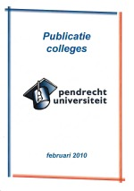De Bewoners Organisatie Pendrecht verandert in 2004 in de stichting Vitaal Pendrecht die Opzoomeracties organiseert en het samenspel tussen verschillende groepen bewoners, woningcorporatie en deelgemeente. Vitaal Pendrecht onder leiding van Bien Hofman ontwikkelt een nieuwe vorm van communicatie, de Pendrecht Universiteit, waarbij bewoners optreden als docenten voor een gehoor van bestuurders en ambtenaren.
noot
De Pendrecht Universiteit gaat gestimuleerd door Ella ter Kuile, oud fractievoorzitter van de VVD, werken op sociocratische wijze via een kring-organisatie met vertegenwoordigers van straat, buurt en wijk. noot
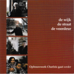Paul Steinmann en Rieks Westrik maken in 2010 een boekje over de inzet van bewoners in Charlois: De wijk, de straat, de voordeur. noot
Het opbouwwerk van Charlois’ Welzijn in Pendrecht en Zuidwijk eindigt in 2010 na de aanbesteding van het welzijnswerk door de deelgemeente. Er worden grote bezuinigingen doorgevoerd in de sociale sector, opbouwwerk ontbreekt in het bestek voor de aanbesteding van welzijnswerk. Een nieuwe welzijnsaanbieder Pit 010 neemt het welzijnswerk in deelgemeente Charlois over.
De Kinderfaculteit van de Pendrecht Universiteit van de Pendrecht Universiteit wordt met middelen van het fonds Verre Bergen een centrum voor een ‘extra-schools’ programma voor kinderen van de basisscholen in de wijk om hun talenten te ontwikkelen.
Opbouwwerker Frank Boerboom, alias Janine Wegman, start in 2012 als Tuinman (m/v) bij Creatief Beheer. Op een braakliggend stuk grond in de Afrikaanderwijk ontstaat een openlucht buurthuis de Afrikaandertuin.
8 Samenlevingsopbouw en sociale projecten
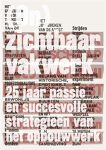Opbouwwerkers die 25 jaar in het vak zitten vertellen in 2010 over hun werk. Het boek (On)zichtbaar vakwerk wordt gepresenteerd als ‘een leesboek over onze stedelijke samenleving en wat het opbouwwerk daarbinnen doet’. noot
Samenlevingsopbouw is sinds de jaren 80 veranderd, de werkzaamheden van opbouwwerkers worden anno 2010 steeds meer gestuurd door instelling en (deel)gemeente. Opbouwwerkers verliezen de ruimte om relaties aan te gaan met bewoners en om initiatieven ‘van onderop’ te stimuleren, opbouwwerk in wijken wordt steeds meer werken aan voorbedachte sociale projecten. Door te werken vanuit instituties in plaats vanuit bewoners en de buurt schiet het opbouwwerk zijn doel voorbij, luidt de kritiek. De verhalen in (On)zichtbaar vakwerk geven een beeld van de veranderingen van het opbouwwerk in Rotterdam vanaf de jaren 80.
Ed de Meijer startte als opbouwwerker in Overschie, met een kraakactie van het leegstaande Skyway-hotel dat in bezit wordt genomen door werkloze jongeren uit Landzicht. Ze beginnen met steun van het opbouwwerk een restaurant, een naaiatelier en een klussendienst. Ook in Cool zet de Meijer werkloosheidprojecten op die onderdak vinden in het leegstaande gebouw van een voormalige GEB-garage.
De Witte de Withstraat wordt in de jaren 80 geregeerd door de onderwereld van gokkasten, prostitutie en drugs. De Meijer en collega Frank Homan werken mee aan de transformatie van de straat door het organiseren van festivals die een nieuw publiek trekken. Een Wijkontwikkelingsmaatschappij koopt panden op, wethouder Kombrink zet middelen in om de straat te veranderen in een ‘museumboulevard’, met galeries en trendy horeca.
De Meijer werkt samen met ds. Visser van de Pauluskerk en Nora Storm bij de opvang van verslaafden. De opbouwwerker trotseert protesten van bewoners tegen een centrum voor methadonverstrekking in de Hoornbrekerstraat in Cool. Gebruikers maken de buurt schoon en ondersteunen een plantenactie.
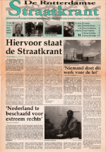Mede dankzij de verkoop van De Rotterdamse Straatkrant konden ze een behoorlijk inkomen verdienen. De krant is in 1995 ontwikkeld door Erik Lindenburg die voor de redactie kon putten uit zijn netwerk van schrijvende vrijwilligers van een aantal Rotterdamse buurtkranten.
Er wordt een gezamenlijke Opzoomermaaltijd georganiseerd. noot
Met festivals op het Pijnackerplein in het Oude Noorden draagt de Meijer bij aan ‘een kindvriendelijke wijk’, het plein wordt weer in bezit genomen door ouders en kinderen. Hangjongeren krijgen een nieuwe plek bij sportverenigingen, vmbo-leerlingen begeleiden kinderen met het spelen van games in een tent die op het plein wordt neergezet. ‘De frustratie en woede van die gasten komt voort uit het doelloze leven dat ze leiden’, zegt de opbouwwerker. ‘Gebrek aan opleiding, geen perspectief en de eenzaamheid, niemand is in ze geïnteresseerd.’
De ‘projectencarrousel’ staat het echte opbouwwerk in de weg, stelt de Meijer. Er is weinig aandacht voor analyse van wat er echt speelt in een wijk, voor samenleven in buurten die onder druk staan. ‘Het openbare debat gaat nu vaak over bange oude mensen en perspectiefloze jongeren.’ Dat is niet waar het om gaat in achterstandswijken. ‘Mensen willen leven in een stimulerende omgeving die kansen biedt, ruimte geeft, stimuleert en dynamisch is. Zo dat je voelt dat je leeft.’
Kinderen moeten niet weggezet worden als overlastgevers. ‘Je moet hun talenten ontwikkelen, je moet bereid zijn met die kinderen naar de voetbalvereniging te gaan, maar je moet ook die vaders uit de theehuizen durven halen.’ Daarbij moet je als opbouwerker de juiste allianties aangaan en bondgenoten zoeken in scholen, de corporatie, de moskee, de beheer coördinator. ‘Mensen die elkaar vertrouwen en een gevoel van verbondenheid hebben kunnen zaken veranderen. Zo’n groep gemotiveerde mensen, met budget en mandaat maakt het verschil in de wijk.’
Sjaan Schaap leerde het vak van opbouwwerker als stagiaire bij Ton Huiskens in het Oude Noorden. Ze leert hoe je mensen mobiliseert en invloed organiseert in plaats van ‘inspraak’. Het actie- en campagneplan ‘Oude Noorden naar Voren’ (spreek uit op z’n Rotterdams) bevat 20 concrete actiepunten, het programma van de bewonersorganisatie wordt verbreed van ‘bouwen voor de buurt’ naar voorzieningen voor ouderen en jongeren, met feestelijke bijeenkomsten met bewoners. Per actiepunt wordt een ‘vaandeldrager’ aangewezen, op de afsluitende bijeenkomst komen 450 bewoners af. Het wordt een confrontatie met twee wethouders die door de zaal tot toezeggingen worden gedwongen. De eisen worden kracht bijgezet met intrigerende leuzen die rondgaan in de wijk, zoals: ‘Jokon S, we willen jou’, de eis voor een jongerencentrum in een oude school.
Er is veel boosheid, ongeloof en scepsis bij bewoners, weet Schaap. Dat kan zich vertalen in slachtofferschap. ‘De onderkant van de samenleving heeft de neiging om zich negatief af te zetten. Dat komt omdat ze niet zo veel succeservaringen hebben. Maar je verliest de grip op het leven als je je alleen maar afzet en in de rol van slachtoffer schiet.’ Ze vindt het opboksen tegen scepsis en negativiteit een van de zwaarste taken van het opbouwwerk. Ludieke acties, aansprekende leuzen, feestelijke bewonersbijeenkomsten zijn manieren om een negatieve sfeer tegen te gaan. Als opbouwwerker moet je je verbinden met mensen met bepaalde idealen en dat verbreden naar mensen die alleen klagen. ‘Delen in gezamenlijk behaalde successen en ervaren dat jouw stap het verschil maakt zorgt voor weerbaarheid, maar ook voor vertrouwen in elkaar, dus in de samenleving.’
Als opbouwwerker in het Oude Westen wordt Sjaan Schaap geconfronteerd met overlast van dealers en gebruikers die ontstaat na de sluiting van Perron Nul. Ze wil voorkomen dat de wijk negatief in beeld komt zoals gebeurt met Spangen, met verhalen over bewoners die Franse drugstoeristen aanvallen en auto’s in brand steken. ‘Wanneer je constant als criminele wijk in de publiciteit komt, gaan mensen zich angstiger voelen. Alle krachten die positief zijn trekken uit de wijk weg.’ Het Oude Westen kampt met drugsoverlast op de West-Kruiskade, het protest tegen extra opvanglocaties voor drugsverslaafden in de wijk krijgt als slogan ‘Dág Dagopvang’. Het staat met grote letters op een versierde container die door een hoogwerker dwars op de Coolsingel wordt gezet. De actie wordt strak geregisseerd, afspraak is dat bewoners geen interviews geven om geen voeding te geven aan negatieve verhalen in de pers. Wethouder Meijer begrijpt de boodschap en zorgt dat opvang over de hele stad wordt verspreid. Ook de verslaafdenopvang in de Pauluskerk verhuist, de nieuwe Pauluskerk heeft geen gebruikersruimte meer.
Een opbouwwerker moet signalen van bewoners kunnen opvangen, zegt Schaap, daarmee aan het werk gaan, coalities smeden met andere organisaties, de politiek betrekken en publiciteit genereren. Dat staat haaks op de trend van projectmatig opbouwwerken. ‘Je moet in het gebied aanwezig zijn waar je werkt. Je moet die wijk voelen en ruiken: de geschiedenis en haar bewoners kennen. De bewoners moet jou ook weer weten te vinden.’
Er moet Sjaan Schaap nog iets van het hart. ‘Hoe is het mogelijk dat in een samenleving die steeds ingewikkelder wordt de basisinfrastructuur uit de wijk wordt wegbezuinigd? De huismeesters zijn verdwenen, de wijkkantoren van de woningcorporaties zijn er niet meer en een groot deel van de maatschappelijk werkers en opbouwwerkers zijn wegbezuinigd. Wat over blijft zijn projecten waarvoor we uren schrijven.’
Elske Geleedst ging de in jaren 70 werken in buurthuis Open Huis in Delfshaven. Ze solliciteert bij sigaren rokende heren van de Katholieke Stichting voor Gezin en Jeugd. Ze zorgt er voor dat het buurthuis gaat samenwerken met de bewonersorganisatie en zich open stelt voor de wijk met cursussen voor vrouwen en alfabetisering van migranten. Doelstelling van het buurthuis wordt empowerment en samenlevingsopbouw. ‘Bewoners kwamen met verzoeken of ze vrijdagavond samen konden koken. Op die kooksessies kwamen gezinnen af om mee te eten. Het werd een combinatie van armoedebestrijding, onderling contact maken, kennis uitwisselen en gezelligheid. Bij gezinskampen in de bossen, bij weekendjes weg gaan ook migrantengezinnen mee. ‘Het klimaat was open en tolerant.’
Na tien jaar maakt Geleedst de overstap naar de Provenierswijk. De wijk heeft te kampen met overlast van het nabijgelegen Perron Nul. ‘Hoofdthema voor bewoners blijkt onveiligheid, er kwamen dealpanden en junks overspoelden de wijk.’ De opbouwwerker belegt samen met de wijkagent bijeenkomsten met bewoners, er ontstaan straatnetwerken die activiteiten organiseren, wandeltochten door de wijk om een oogje in het zeil te houden worden ook een uitje dat een diverse groep bewoners trekt en eindigen in een café. Naast schoonmaakacties is er ook een muzikale pantoffelparade langs de singels. De bewoners nemen langzaam weer bezit van de buurt en de druk op de politiek om wat te doen aan de overlast wordt vergroot. In 1994 wordt de drugsopvang bij het CS gesloten.
In het Lage Land gaat Geleedst werken aan de opzet van een buurtcentrum nieuwe stijl voor de opvang van oudere bewoners van de Prinsesseflats die gerenoveerd worden. De bewoners gaan als vrijwilliger aan het werk voor ouderen die zelfstandig thuis blijven wonen. Ze gaan samenwerken met de bewoners van een gezinsvervangend tehuis voor verstandelijk gehandicapten van Pameijer. Het nieuwe ontmoetingscentrum Prinsenhof heeft een bewonersvereniging met 300 leden die verantwoordelijk is voor het reilen en zeilen van het centrum. De opbouwwerker ondersteunt de vereniging. Bewoners werken als vrijwilliger en helpen ook bij de begeleiding van de Pameijer-cliënten. De Prinsenhof wint in 2007 de prijs voor het beste woonzorg-initiatief voor ouderen.
Na de aanbesteding van het welzijnswerk verdwijnt opbouwwerkinstelling SONOR in 2014 van het toneel. Elske Geeedst stapt over naar de nieuwe ‘welzijnsaanbieder’ WMO Radar, ze organiseert de inzet van vrijwilligers, ook als ‘tegenprestatie’ bij een uitkering, bij de thuiszorg via het project Belfleur. De nieuwe organisatie vindt de term ‘opbouwwerker’ ouderwets, de nieuwe functie heet ‘buurtcoach’. Geleedts blijft zich opbouwwerker voelen maar stelt vast dat er minder ruimte is om in te spelen op initiatieven van bewoners in buurten. Leefbaarheid en veiligheid, het publieke domein, is niet langer de corebusiness, de aandacht verschuift naar zorg en steun voor mensen achter de voordeur. Veel wordt van bovenaf bedacht en vastgelegd in jaarplannen. ‘Elk uur moet je achteraf aan de hand van het jaarplan kunnen verantwoorden.’
Devies van Laurie Hermanns is ‘strijden tegen onrecht’. Haar afstudeeronderwerp op de Sociale Academie is armoede en woonlasten. Als opbouwwerker in Feijenoord zet ze samen met bewoners van de Peperklip de eerste Woonlastenwinkel op in Rotterdam waar mensen steun krijgen bij betalingsproblemen. De nieuwbouw in de stadsvernieuwing blijkt voor velen onbetaalbaar. De winkel wordt gerund door vrijwilligers, bewoners leren ook om te gaan met een beperkt budget met behulp van een huishoudboekje. De Woonlastenwinkel geeft een impuls aan de ontwikkeling van een gemeentelijk beleid voor schuldsanering.
Van Feijenoord maakt Hermanns de overstap naar Kralingen om sociaal projectleider te worden van de grote saneringsoperatie van ‘de gifwijk’ op het terrein van een voormalige gasfabriek. Onder leiding van VVD wethouder Ankie Verbeek wordt een projectgroep gevormd voor de sanering, geënt op de stadsvernieuwingsaanpak. Bewoners krijgen medezeggenschap met sociale en technische ondersteuning bij de saneringsoperatie, de sloop- en nieuwbouw van woningen, herhuisvesting en verhuiskostenvergoeding. ‘Het politieke bestuur liet toe dat bewoners tegenkracht organiseerden’, concludeert Hermanns. ’Het bijzondere was dat ik de ruimte had om het verzet van bewoners te organiseren. Door de open sfeer in de projectorganisatie leidde dat niet tot spanningen.’
Na afronding van het saneringsproject wordt Hermanns geconfronteerd met de nieuwe verhoudingen in het welzijnswerk, met bezuinigingen, marktwerking en aanbesteding. Haar werkzaamheden als basisopbouwwerker in Bloemhof en Schiedam stoppen voortijdig en worden overgenomen door een andere welzijnsaanbieder.
Een panel met bestuurders, woningcorporatie en onderzoek reageert op de verhalen van de opbouwwerkers.
Opbouwwerkers wisten vroeger verbindingen te leggen met bewoners en maakten een analyse van de wijk, zegt Jenny Schakelaar, directeur van woningcorporatie Vestia in Feijenoord. Ze werkt bij de aanpak van vandalisme en leegstand binnen woongebouw de Peperclip samen met het bureau Werken aan de stad van voormalige opbouwwerkers. Het opbouwwerk in Feijenoord is voor haar geen partner, Schakelaar is van mening dat het zich pro-actiever moet opstellen en meer initiatief moet nemen.
Richard Scalzo, bestuurder van deelgemeente Noord, liep mee met opbouwwerkers en ziet dat ze bouwen aan het sociale weefsel van de wijk, ze maken verbindingen tussen mensen. Hij bepleit een meer methodische manier van werken en het stellen van targets.
Oud-wethouder Leonard Geluk CDA zegt dat ‘hij aanvankelijk weinig had met opbouwwerk’. ‘Mijn beeld van opbouwwerk was dat van een linkse bende die actie voert tegen de corporatie en de gemeente.’ Hij heeft een beter zicht gekregen op het werkveld via methoden als Opzoomeren en Mensen maken de stad, die gericht zijn op het opzetten van nieuwe sociale structuren. ‘Wil je meer sociale kwaliteit in de stad dan zullen bewoners zelf actiever moeten zijn. Het opbouwwerk kan de schakel zijn om dat voor elkaar te brengen.’
De aanbesteding van het opbouwwerk een drama is voor de stad, constateert Geluk. Het lost de sociale problemen in de wijk niet op. ‘Tot de vaste infrastructuur van de wijk horen: de school, de wijkagent, de huisarts, maar ook de opbouwwerker.’
De rol van opbouwwerk is signaleren, ontmoetingen entameren en activiteiten organiseren. Hij pleit voor een koppeling van het opbouwwerk en de brede school. De sociale functie van de school in de wijk wordt daardoor groter, het kan de positie van bewoners (en kinderen) versterken. ‘Het opbouwwerk kan door deze koppeling veel meer massa maken.’
Burgemeester Aboutaleb schrijft in een voorwoord van (On)zichtbaar vakwerk dat samenwerking en verbinding de belangrijkste aspecten zijn van opbouwwerk. Hij ziet opbouwwerk als brug om mensen met elkaar in contact te brengen en daarmee de ontmoeting en maatschappelijke participatie verder inhoud te geven. ‘Denk hierbij aan initiatieven als Mensen Maken de Stad, Opzoomeren, Rotterdam Idee en ook Sociaal vertrouwen (groepen die geen contact met elkaar hebben met elkaar in contact brengen zoals witte ouderen en autochtone jongeren).’
Opbouwwerk kan een belangrijke rol spelen bij stadsburgerschap, bij het zien van anderen als medeburgers, het respecteren van onderlinge verschillen, het creëren van vertrouwen tussen burgers onderling en het verbinden van mensen met elkaar en met de overheid.
De burgermeester heeft ook kritiek: ‘Teveel tijd en geld gaan zitten in initiatieven die al lopen en die ook zonder het opbouwwerk kunnen blijven draaien.’
9 Naschrift: zelfredzaamheid, zelforganisatie, Opzoomeren
Het opbouwwerk als onafhankelijke en herkenbare sociale voorziening verdwijnt vanaf 2010 in de meeste Rotterdamse wijken.
Opbouwwerk, sociaal-cultureel werk, maatschappelijk werk en ouderenwerk houden op te bestaan, er wordt een nieuwe discipline ontwikkeld: ‘sociaal werk’. Sociale teams in wijken moeten de zelfredzaamheid van burgers en cliënten bevorderen.
De omslag naar het Nieuwe Welzijn is top-down, er ontstaat een ambtelijk-bestuurlijke bureaucratie die de taken op sociaal terrein opnieuw definieert in een bestek en via aanbesteding laat uitvoeren door nieuwe ‘welzijnsaanbieders’.
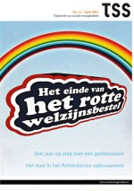Belangrijke factor bij de aanbesteding is de prijs, het nieuwe welzijn moet gerealiseerd worden tegen lagere kosten. De operatie gaat gepaard met grote bezuinigingen in de sociale sector na de financiële crisis in 2008.
Er komt een einde aan vanzelfsprekende subsidierelaties. noot
Boer de N., Van der Lans J., Opzij voor burgerkracht, hoe het rotte welzijnsbestel ingrijpend zal veranderen, in. TSS 5/2011.
Het laatste nummer van MO/samenlevingsopbouw verschijnt in 2012, opvolger wordt het Tijdschrift voor Sociale Vraagstukken. Een breed spectrum van onderzoekers en opiniemakers laat zijn licht schijnen over de toekomst van samenlevingsopbouw. Meer zelf doen, het moet en het kan maar het is moeilijk, zegt hoogleraar samenlevingsopbouw Justus Uitermark. Opbouwwerkers en samenlevingsdeskundigen buigen zich over de toekomst van het Rotterdamse opbouwwerk. ‘We hebben mensen nodig die in de haarvaten van de wijk zitten en partijen met elkaar kunnen verbinden.’
Opbouwwerkinstellingen SONOR, Delphi en Charlois’ Welzijn verliezen in 2013 de aanbesteding voor hun gebied.
DOCK, scoort goed bij aanbestedingen, de instelling krijgt in 2005 de prijs voor Maatschappelijke ondernemer van het jaar en neemt ook werk aan in Haarlem en Amsterdam
Bij wijze van naschrift bij de historie van het Rotterdamse opbouwwerk in de periode 1965-2010 een schetsmatig overzicht van sociale ontwikkelingen in het afgelopen decennium.
Enkele initiatieven uit de opbouwwerk-traditie worden voortgezet, samenlevingsopbouw krijgt ook nieuwe vormen, het spel en tegenspel van bewoners en gemeente verzwakt door het wegvallen van onafhankelijke professionele ondersteuning van ‘een derde’.
Vanaf 2010 ontstaat een nieuw sociaal bestel, trefwoorden zijn zelfredzaamheid en zelforganisatie, participatiesamenleving en ‘burgerkracht’.
Gemeente en woningbouwcorporaties zetten maatschappelijk vastgoed te koop. Woningcorporaties worden verhuurbedrijven voor bewoners met lage inkomens en verliezen de mogelijkheid om te investeren in de leefbaarheid van wijken.
Buurthuizen en sociaal-cultureel werk verdwijnen, in plaats daarvan komen Huizen van de wijk die ontmoetingsruimte bieden voor groepen uit de wijk.
Ook de Bewonersorganisatie Aktiegroep Het Oude Westen moet zichzelf opnieuw uitvinden. Wethouder Eerdmans Leefbaar Rotterdam beëindigt in 2016 de Verordening Organisatie Bewonersorganisaties die dan nog van toepassing is voor het centrumgebied. Daarmee stopt de subsidie voor opbouwwerk, huisvesting, organisatie en activiteiten van de Aktiegroep Het Oude Westen. De Aktiegroep beschikt als een van de weinige bewonersorganisaties in Rotterdam over een opbouwwerker en boort nieuwe middelen aan met initiatieven voor het duurzaam maken van de wijk.
Bij welzijnsorganisaties, woningcorporaties en gemeente ontstaan nieuwe contact- en verbindings-functies, zoals ‘buurtcoach’, ‘participatiemakelaar’, ‘gebiedsregisseur’ en ‘gebiedsnetwerker’. De wijkagent wordt ‘buurtregisseur’.
De ‘agogisering’ van gemeentelijke diensten maakt de relatie tussen bewoner en gemeente onoverzichtelijk: wie heb je voor je, op welke agenda wordt gewerkt?
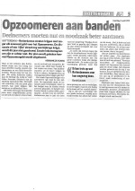Wethouder Korrie Louwes D66 kondigt in 2010 aan dat de doelen van Mensen maken de stad zijn gerealiseerd. Het project wordt beëindigd, een evaluatie ontbreekt. Het nieuwe programma Opzoomer Mee 2.0 moet duidelijker aangeven wat de opbrengst is van activiteiten in straten, straatfeestjes en barbecues worden niet langer gesubsidieerd.
• Opzoomeren aan banden, AD Rotterdams Dagblad 4 april 2011
Sociaal werk is vooral maatschappelijk werk geworden, concludeert Johan Janssens in 2021. Het is gericht op individuele personen en op het maken van netwerkjes rond individuen, als voorportaal van de zorg. ‘Maatschappelijke en politieke problemen worden gezien als individuele problemen die mensen op eigen kracht moeten oplossen. Het ontwikkelen van sociale verbanden en gemeenschappen is geen doelstelling meer van sociaal beleid.’
De gemeente stelt een nieuw fonds in waarmee bewonersinitiatieven in de wijk gefinancierd kunnen worden. Nieuw instrument om burgerinitiatief te triggeren is ook Rotterdam Idee, later het Stadsinitiatief, een prijsvraag voor vernieuwende stedelijke projecten.
De methode van ‘premie op actie’ en ‘uitdagingen’ die in de jaren 90 door het projectbureau Sociale Vernieuwing werd ontwikkeld neemt met fondsen, prijsvragen en publiekcampagnes een brede vlucht.
Opzoomer Mee treedt op als adviseur van initiatiefnemers in wijken, de toekenning van budgetten vindt plaats door gebiedscommissies en wijkraden die in 2014 in de plaats komen van deelgemeenten. De wijkraden hinken, zoals de vroegere wijkorganen, tussen wijkbestuur en participatie-orgaan.
‘Stadmakers’, ontwerpers en stedenbouwkundigen, ontwikkelen tijdens de crisis een tijdelijk gebruik van gebouwen en terreinen in afwachting van de bouw van woningen of kantoren.
Het beleid is er op gericht om burgers te stimuleren om zelf het voortouw nemen bij sociale initiatieven. Dit leidt ook tot ‘gentrificatie van samenlevingsopbouw’, met de nieuwe middenklasse in the lead. Middelland is een van de wijken die in de gemeentelijke Woonvisie wordt aangewezen als woongebied voor nieuwe stedelingen en gezinnen met kinderen. Vanuit het veiligheidsprogramma Buurt bestuurt stelt burgermeester Aboutaleb een budget ter beschikking aan de wijk van 9 miljoen euro voor een periode van 4 jaar. Het budget is bedoeld om een aantal opvangvoorzieningen die in de jaren 90 in de wijk gevestigd werden naar elders te verplaatsen, om winkelstraten te vernieuwen en initiatieven van bewoners te stimuleren via de campagne Mooi Mooier Middelland. De initiatiefnemers nemen hun intrek in het souterrain van het Trefcentrum dat leegstaat na bezuinigingen. noot
Minder sociaal vaardige bewoners vinden moeilijker aansluiting, hun stem wordt vaak niet gehoord. Ze zijn geen partij bij overleg over sloop en nieuwbouwprojecten om ‘buurten in balans te brengen’ door het aantal sociale huurwoningen te verkleinen en ruimte maken voor meer draagkrachtige bewoners. In de Tweebosbuurt worden bruikbare woningen en sociale verbanden gesloopt.
Milieu en duurzaamheid vormen een nieuw maatschappelijk en bestuurlijk kader voor bewonersinitiatief, met een ecologische (dak)tuin energie- en bewonerscoöperaties. Een van de voortrekker is oud-opbouwwerker en Opzoomeraar van het eerste uur Emile van Rinsum.
Onderdeel van energietransitie is in enkele wijken ‘community building’ en ‘‘buurtmaken’, waarbij via de ABCD-methode verbindingen tussen bewoners in de buurt worden gemaakt.
Initiatief in de traditie van samenlevingsopbouw is ook het Verhalenhuis Belvédère. Het Verhalenhuis verbindt mensen uit verschillende culturen en gemeenschappen met maaltijden en verhalen uit de Volkskeuken, met tentoonstellingen wordt de diversiteit van culturen van Rotterdammers in beeld gebracht.
De speeluitleen op pleinen van Duimdrop staat na dertig jaar ter discussie. Thuis Op Straat TOS gaat voort met het organiseren van activiteiten op pleinen voor de jeugd van 4 tot en met 23 jaar en ‘spel- en speelplezier met regels en aandacht voor iedereen’.
Opzoomerstraten gaan opereren op eigen kracht, gestimuleerd door campagnes van Opzoomer Mee met premies voor activiteiten. Samenwerken in straten met veel verschillende culturen is ingewikkeld, om dat te bereiken is vaak een derde nodig, zegt Janssens. ‘Dat kan ook een wijkagent of een dominee zijn.’ Een pilot met welzijns-partijen in 2018 leidt tot het voorstel om ondersteuning aan Opzoomerstraten op te nemen in het bestek voor de nieuwe aanbesteding.
Ireen van der Lem, oud opbouwwerker in Middelland en het Nieuwe Westen, is coördinator van de nieuwe campagne Lief en leed die ‘het omzien naar elkaar’ stimuleert. Aanleiding is dat een vrouw jarenlang dood in haar woning ligt zonder dat dit wordt opgemerkt. Het initiatief krijgt veel navolging, ook buiten Rotterdam.
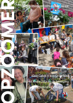Opzoomer Mee viert in 2019 haar 25 jarig jubileum.
De geschiedenis van Opzoomer Mee moet nog worden geschreven. Het lukt de organisatie de afgelopen decennia om op inventieve wijze in te spelen op wisselende politieke constellaties en beleidskaders, van sociale vernieuwing, veiligheid, sociale cohesie, sociale integratie en (straat)burgerschap. Inzet blijft het organiseren van activiteiten die onderling contact bevorderen om zo prettig en sociaal te kunnen leven in een straat.
Mei 2021